This table lists the front and rear brake-pad shapes recorded for individual MotoX Wiki models. The pad code identifies the backing-plate shape; suffixes such as HH, HS or LS identify the friction compound.
844 models currently have a verified front or rear fitment entry. Several models can share one shape, so the same code may appear on more than one row.
For the cross-brand equivalents of each shape, use the pad shape cross-reference.
Motorcycle fitment table
EBC shape badges show the actual pad diagram, shape code and published dimensions. Diagrams reproduced with written permission from EBC.
| Model | Front brake pads | Rear brake pads | EBC shape reference |
|---|---|---|---|
| Aprilia 1000 Blue Marlin (2002) | SBS 706HS | EBC FA266 · SBS 730LS |  FA26651.5 × 54.5 × 7.5 mm FA26651.5 × 54.5 × 7.5 mm |
| Aprilia 1000 Thundercat (2009–2014) | EBC FA395 · SBS 822ATS | — |  FA39594.5 × 45.5 × 7 mm FA39594.5 × 45.5 × 7 mm |
| Aprilia 250 2x4 (2005–2006) | EBC FA395 · SBS 822ATS | — | FA39594.5 × 45.5 × 7 mm |
| Aprilia 250 DVX (2006–2009) | EBC FA377 · SBS 810SI | SBS 775SI | FA37794 × 47 × 8.5 mm |
| Aprilia 300 2x4 (2010–2013) | EBC FA395 · SBS 822ATS | — | FA39594.5 × 45.5 × 7 mm |
| Aprilia 300 DVX (2009–2016) | EBC FA377 · SBS 810SI | SBS 775SI | FA37794 × 47 × 8.5 mm |
| Aprilia 400 DVX (2004–2008) | EBC FA84 · SBS 592SI | EBC FA137 · SBS 649SI |  FA8446 × 45 × 8 mm FA8446 × 45 × 8 mm FA13747 × 45 × 7.5 mm FA13747 × 45 × 7.5 mm |
| Aprilia 450 H1 (2010) | EBC FA395 · SBS 822ATS | — | FA39594.5 × 45.5 × 7 mm |
| Aprilia 50 DVX (2006–2008) | SBS 2048 | EBC FA165 · SBS 638SI |  FA16597 × 42 × 7.5 mm FA16597 × 42 × 7.5 mm |
| Aprilia 550 H1 (2009–2013) | EBC FA395 · SBS 822ATS | — | FA39594.5 × 45.5 × 7 mm |
| Aprilia 550 LTD (2009–2012) | EBC FA395 · SBS 822ATS | — | FA39594.5 × 45.5 × 7 mm |
| Aprilia 650 Pegaso (1992–2000) | EBC FA177 · SBS 681HF | EBC FA173 · SBS 651HF |  FA17787 × 52 × 7.5 mm FA17787 × 52 × 7.5 mm FA17385.5 × 42.5 × 7.5 mm FA17385.5 × 42.5 × 7.5 mm |
| Aprilia 660 Tuono Factory (2022–Present) | SBS 900HS | EBC FA266 · SBS 730LS | FA26651.5 × 54.5 × 7.5 mm |
| Aprilia 700 Diesel (2006–2014) | EBC FA395 · SBS 822ATS | — | FA39594.5 × 45.5 × 7 mm |
| Aprilia 700 H1 (2009–2010) | EBC FA395 · SBS 822ATS | — | FA39594.5 × 45.5 × 7 mm |
| Aprilia 90 DVX (2006–2014) | SBS 2048 | EBC FA165 · SBS 638SI | FA16597 × 42 × 7.5 mm |
| Aprilia ETV 1000 Caponord (2001–2008) | SBS 674HS | EBC FA266 · SBS 730LS | FA26651.5 × 54.5 × 7.5 mm |
| Aprilia ETV 1000 Caponord Rally Raid (2004–2008) | SBS 674HS | EBC FA266 · SBS 730LS | FA26651.5 × 54.5 × 7.5 mm |
| Aprilia MXV 450 (2009–2013) | EBC FA185 · SBS 694RSI | EBC FA367 · SBS 790RSI |  FA18594 × 33.5 × 7 mm FA18594 × 33.5 × 7 mm FA36767 × 36 × 11 mm FA36767 × 36 × 11 mm |
| Aprilia NA 850 Mana (2007) | EBC FA432 · SBS 844HS | SBS 675LS |  FA43268.5 × 55.5 × 9 mm FA43268.5 × 55.5 × 9 mm |
| Aprilia NA 850 Mana,ABS (2008–2011) | EBC FA432 · SBS 844HS | SBS 588HF | FA43268.5 × 55.5 × 9 mm |
| Aprilia NA 850 Mana GT,ABS (2009–2013) | EBC FA432 · SBS 844HS | SBS 588HF | FA43268.5 × 55.5 × 9 mm |
| Aprilia RS 125 (2021–Present) | EBC FA399 · SBS 821HS | EBC FA83 · SBS 544HF | 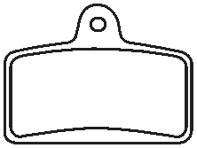 FA39969.5 × 51.5 × 7 mm FA8347.5 × 37 × 9 mm FA8347.5 × 37 × 9 mm |
| Aprilia RS 125 GP (2017–2019) | EBC FA399 · SBS 821HS | EBC FA83 · SBS 544HF | FA39969.5 × 51.5 × 7 mmFA8347.5 × 37 × 9 mm |
| Aprilia RS-4 125 (AJP cal.) (2011–2019) | EBC FA399 · SBS 821HS | EBC FA93 · SBS 585HF | FA39969.5 × 51.5 × 7 mm 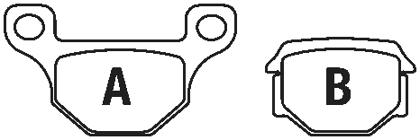 FA9387.5 × 49 × 8 mm |
| Aprilia RS-4 125 (J.Juan cal.) (2011–2019) | EBC FA95 · SBS 566HS | EBC FA83 · SBS 544HF |  FA9569.5 × 51 × 8 mmFA8347.5 × 37 × 9 mm FA9569.5 × 51 × 8 mmFA8347.5 × 37 × 9 mm |
| Aprilia RS 660 (2020–Present) | EBC FA630HH · SBS 900HS · Brembo 07BB38 · Vesrah VD-9070 | EBC FA266 · SBS 730LS · Brembo 07BB20 · Vesrah VD-964 |  FA63085 × 50.5 × 8 mmFA26651.5 × 54.5 × 7.5 mm FA63085 × 50.5 × 8 mmFA26651.5 × 54.5 × 7.5 mm |
| Aprilia RS 660 Extrem (2023) | SBS 900HS | EBC FA266 · SBS 730LS | FA26651.5 × 54.5 × 7.5 mm |
| Aprilia RS 660 Trofeo (2022) | SBS 900HS | EBC FA266 · SBS 730LS | FA26651.5 × 54.5 × 7.5 mm |
| Aprilia RST 1000 Futura (2001–2003) | SBS 706HS | EBC FA181 · SBS 671LS |  FA18194 × 36.5 × 7.5 mm FA18194 × 36.5 × 7.5 mm |
| Aprilia RSV 1000 Factory Pista (2004) | SBS 762HS | EBC FA266 · SBS 730LS | FA26651.5 × 54.5 × 7.5 mm |
| Aprilia RSV 1000 Falco SL, R (2000–2004) | SBS 706HS | EBC FA266 · SBS 730LS | FA26651.5 × 54.5 × 7.5 mm |
| Aprilia RSV 1000 Nera (2004) | SBS 762HS | EBC FA266 · SBS 730LS | FA26651.5 × 54.5 × 7.5 mm |
| Aprilia RSV 1000 R (2000–2007) | SBS 706HS | EBC FA266 · SBS 730LS | FA26651.5 × 54.5 × 7.5 mm |
| Aprilia RSV 1000 R Factory (2004–2008) | SBS 762HS | EBC FA266 · SBS 730LS | FA26651.5 × 54.5 × 7.5 mm |
| Aprilia RSV 1000 SP (2000) | SBS 706HS | EBC FA266 · SBS 730LS | FA26651.5 × 54.5 × 7.5 mm |
| Aprilia RSV 1000 Tuono Fighter (2003–2005) | SBS 706HS | EBC FA266 · SBS 730LS | FA26651.5 × 54.5 × 7.5 mm |
| Aprilia RSV 1000 Tuono R (2003) | SBS 762HS | EBC FA266 · SBS 730LS | FA26651.5 × 54.5 × 7.5 mm |
| Aprilia RSV 1000 Tuono R,ABS (2004–2012) | SBS 706HS | EBC FA266 · SBS 730LS | FA26651.5 × 54.5 × 7.5 mm |
| Aprilia RSV 1000 Tuono R Factory,ABS (2006–2012) | SBS 762HS | EBC FA266 · SBS 730LS | FA26651.5 × 54.5 × 7.5 mm |
| Aprilia RSV 1000 Tuono V4 R (2011–2014) | SBS 706HS | EBC FA266 · SBS 730LS | FA26651.5 × 54.5 × 7.5 mm |
| Aprilia RSV 1100 Tuono V4 (2015) | SBS 900HS | EBC FA266 · SBS 730LS | FA26651.5 × 54.5 × 7.5 mm |
| Aprilia RSV 1100 Tuono V4 Factory (2015–2018) | SBS 900HS | EBC FA266 · SBS 730LS | FA26651.5 × 54.5 × 7.5 mm |
| Aprilia RSV 1100 Tuono V4 RR (2015–2019) | SBS 900HS | EBC FA266 · SBS 730LS | FA26651.5 × 54.5 × 7.5 mm |
| Aprilia RSV4 1000 Factory (2009–2011) | EBC FA447 · SBS 841HS | EBC FA266 · SBS 730LS | FA447102 × 42 × 7.5 mmFA26651.5 × 54.5 × 7.5 mm |
| Aprilia RSV4 1100 Factory (2019–Present) | EBC FA447 · SBS 841HS | EBC FA266 · SBS 730LS | FA447102 × 42 × 7.5 mmFA26651.5 × 54.5 × 7.5 mm |
| Aprilia RSV4 (2021–Present) | SBS 706HS | EBC FA266 · SBS 730LS | FA26651.5 × 54.5 × 7.5 mm |
| Aprilia RSV4-R 1000 ,ABS APRC (2010) | EBC FA447 · SBS 841HS | EBC FA266 · SBS 730LS | FA447102 × 42 × 7.5 mmFA26651.5 × 54.5 × 7.5 mm |
| Aprilia RSV4-RF 1000 (2015–2020) | SBS 901HS | EBC FA266 · SBS 730LS | FA26651.5 × 54.5 × 7.5 mm |
| Aprilia RSV4-RR 1000 (2015–2020) | SBS 901HS | EBC FA266 · SBS 730LS | FA26651.5 × 54.5 × 7.5 mm |
| Aprilia RXV 450 (2006–2013) | EBC FA185 · SBS 694SI | EBC FA367 · SBS 790SI | FA18594 × 33.5 × 7 mmFA36767 × 36 × 11 mm |
| Aprilia RXV 550 (2006–2013) | EBC FA185 · SBS 694SI | EBC FA367 · SBS 790SI | FA18594 × 33.5 × 7 mmFA36767 × 36 × 11 mm |
| Aprilia SL 750 Shiver,ABS (2007–2018) | EBC FA432 · SBS 844HS | SBS 675LS | FA43268.5 × 55.5 × 9 mm |
| Aprilia SL 750 Shiver GT,ABS (2009–2012) | EBC FA432 · SBS 844HS | SBS 675LS | FA43268.5 × 55.5 × 9 mm |
| Aprilia SX 125 (2018–Present) | Brembo 07SU12 | Brembo 07KA07 | — |
| Aprilia SXV 450 (2006–2013) | EBC FA405 · SBS 842RSI | EBC FA367 · SBS 790RSI |  FA40576.5 × 49.5 × 8 mmFA36767 × 36 × 11 mm FA40576.5 × 49.5 × 8 mmFA36767 × 36 × 11 mm |
| Aprilia SXV 450 Van den Bosch Rep. (2008–2010) | SBS 695RST | EBC FA367 · SBS 790RSI | FA36767 × 36 × 11 mm |
| Aprilia SXV 550 (2006–2013) | EBC FA405 · SBS 842RSI | EBC FA367 · SBS 790RSI | FA40576.5 × 49.5 × 8 mmFA36767 × 36 × 11 mm |
| Aprilia SXV 550 Van den Bosch Rep. (2008–2010) | SBS 695RST | EBC FA367 · SBS 790RSI | FA36767 × 36 × 11 mm |
| Aprilia TBX 700 (2012–2014) | EBC FA395 · SBS 822ATS | — | FA39594.5 × 45.5 × 7 mm |
| Aprilia TRV 1000 (2009–2014) | EBC FA395 · SBS 822ATS | — | FA39594.5 × 45.5 × 7 mm |
| Aprilia TRV 400 (2009–2013) | EBC FA395 · SBS 822ATS | — | FA39594.5 × 45.5 × 7 mm |
| Aprilia TRV 550 (2009–2014) | EBC FA395 · SBS 822ATS | — | FA39594.5 × 45.5 × 7 mm |
| Aprilia TRV 700 (2009–2012) | EBC FA395 · SBS 822ATS | — | FA39594.5 × 45.5 × 7 mm |
| Aprilia Tuareg 660 (2022–Present) | Brembo 07BB03 | Brembo 07BB02 | — |
| Aprilia Tuono 125 (2017–Present) | SBS 821HS | EBC FA083/2 · SBS 544HF |  FA83/247.5 × 37 × 10 mm FA83/247.5 × 37 × 10 mm |
| Aprilia Tuono 660 (2021–Present) | EBC FA630HH · SBS 900 · Vesrah VD-9070 | EBC FA266 · SBS 157/730 · Vesrah VD-964 | FA63085 × 50.5 × 8 mmFA26651.5 × 54.5 × 7.5 mm |
| Aprilia Tuono V4 (2021–Present) | EBC FA447HH · SBS 841/901 · Vesrah VD-9031 | EBC FA266 · SBS 157/730 · Vesrah VD-964 | FA447102 × 42 × 7.5 mmFA26651.5 × 54.5 × 7.5 mm |
| Aprilia XC 450 (2011–2014) | EBC FA395 · SBS 822ATS | — | FA39594.5 × 45.5 × 7 mm |
| Benelli 302R (2015-2020) | Brembo 07GR83 | Brembo 07GR93 | — |
| Benelli 502C (2021-Present) | Brembo 07BB33 | Brembo 07BB20 | — |
| Benelli Imperiale 400 (2019–Present) | EBC FA196 | — |  FA196102 × 39 × 10 mm FA196102 × 39 × 10 mm |
| Benelli Leoncino 800 (2021–Present) | EBC FA243 · SBS 900HS | SBS 730LS | 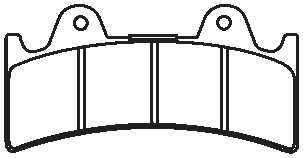 FA24398.5 × 49.5 × 8.5 mm |
| Benelli TRK 502 (2017–Present) | EBC FA322/4HH · SBS 762/782 · Brembo 07BB33 · Vesrah VD-986 | EBC FA698 · SBS 832 · Brembo 07GR93 · Vesrah VD-173 | FA322/435 × 40.5 × 7.5 mm 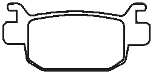 FA69881.5 × 37.5 × 9 mm |
| Benelli TRK 800 (2021–Present) | SBS 900HS | EBC FA266 · SBS 730LS | FA26651.5 × 54.5 × 7.5 mm |
| BMW C 400 GT (2018–Present) | SBS 231MS | EBC FA213 · SBS 175MS |  FA21378 × 41.5 × 9 mm FA21378 × 41.5 × 9 mm |
| BMW C 400 X (2018–Present) | SBS 231MS | SBS 175MS | — |
| BMW F 750 GS (2018–2023) | SBS 674HS | SBS 675LS | — |
| BMW F 850 GS (2018–2023) | SBS 674HS | SBS 675LS | — |
| BMW F 900 R (2020–Present) | EBC FA630HH · SBS 900 · Brembo 07BB38 · Vesrah VD-9070 | EBC FA213 · Brembo 07BB02 | FA63085 × 50.5 × 8 mmFA21378 × 41.5 × 9 mm |
| BMW F 900 XR (2020–Present) | EBC FA630HH · SBS 900 · Brembo 07BB38 · Vesrah VD-9070 | EBC FA213 · Brembo 07BB02 | FA63085 × 50.5 × 8 mmFA21378 × 41.5 × 9 mm |
| BMW G 310 GS (2018–Present) | EBC FA606 · SBS 231/877 · Brembo 07GR18 · Vesrah VD-9068 | EBC FA213 · Brembo 07BB02 |  FA60645.5 × 45 × 8.5 mmFA21378 × 41.5 × 9 mm FA60645.5 × 45 × 8.5 mmFA21378 × 41.5 × 9 mm |
| BMW G 310 R (2016–2025) | Brembo 07GR18 | Brembo 07BB02 | — |
| BMW M 1000 R (2021–Present) | Brembo 07GR99 | Brembo 07KS06 | — |
| BMW M 1000 RR (2021–Present) | EBC FA757HH · SBS 985 · Brembo 07GR99 · Vesrah VD-192 | EBC FA254HH · SBS 715/765/984 · Brembo 07KS06 · Vesrah VD-436 | 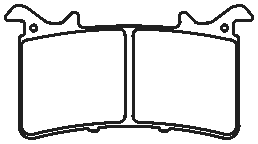 FA75780 × 43 × 7.8 mm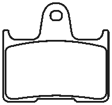 FA25460 × 57 × 8 mm |
| BMW R 1250 GS (2019–Present) | EBC FA724HH · SBS 960 · Brembo 07GR90 · Vesrah VD-9088 | EBC FA209/2 · SBS 176/674/1005 · Brembo 07BB03 · Vesrah VD-958 | 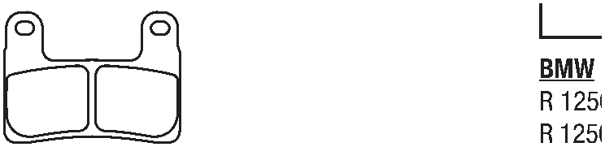 FA72473 × 54.5 × 8.5 mm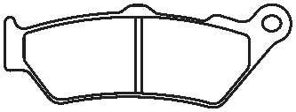 FA209/2109 × 40.5 × 7.5 mm |
| BMW R 1250 RS (2019–Present) | SBS 900HS | SBS 674LS | — |
| BMW R 1250 RT (2019–Present) | EBC FA724HH · SBS 960 · Brembo 07GR90 · Vesrah VD-9088 | EBC FA209/2 · SBS 176/674/1005 · Brembo 07BB03 · Vesrah VD-958 | FA72473 × 54.5 × 8.5 mmFA209/2109 × 40.5 × 7.5 mm |
| BMW R 18 (2020–Present) | EBC FA748HH · SBS 995 · Brembo 07BB40 | EBC FA749HH · SBS 995 · Brembo 07BB41 | 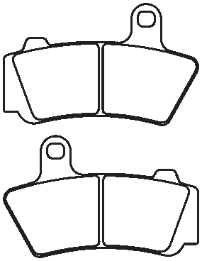 FA74890.5 × 54.5 × 8 mm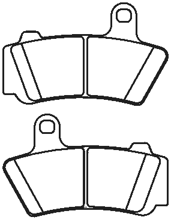 FA74990.5 × 54.5 × 8 mm |
| BMW S 1000 R (2021–Present) | EBC FA630HH · SBS 900 · Brembo 07GR90 · Vesrah VD-9070 | EBC FA213 · Brembo 07BB02 | FA63085 × 50.5 × 8 mmFA21378 × 41.5 × 9 mm |
| BMW S 1000 RR (2009–2016) | EBC FA604/4HH · SBS 870 · Brembo 07BB33 · Vesrah VD-9053 | EBC FA213 · Brembo 07BB02 | 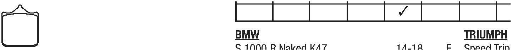 FA604/435 × 40.5 × 8 mmFA21378 × 41.5 × 9 mm |
| BMW S 1000 RR (2017-2018) | EBC FA604/4HH · SBS 870 · Brembo 07BB33 · Vesrah VD-9053 | Brembo 07BB02 | FA604/435 × 40.5 × 8 mm |
| BMW S 1000 RR (2019-Present) | EBC FA724HH · SBS 960 · Vesrah VD-9088 | EBC FA213 | FA72473 × 54.5 × 8.5 mmFA21378 × 41.5 × 9 mm |
| BMW S 1000 XR (2020–Present) | EBC FA724HH · SBS 960 · Brembo 07GR90 · Vesrah VD-9088 | EBC FA363 · SBS 742 · Brembo 07BB28 · Vesrah VD-947/2 | FA72473 × 54.5 × 8.5 mm 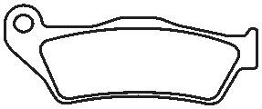 FA36394 × 36.5 × 8.5 mm |
| CFMOTO 250SR (2020–Present) | EBC FA181 | — | FA18194 × 36.5 × 7.5 mm |
| CFMOTO 300SR (2020–Present) | EBC FA181 | — | FA18194 × 36.5 × 7.5 mm |
| CFMOTO 450SR (2022–Present) | Brembo 07BB38 | Brembo 07HO61 | — |
| CFMOTO 650NK (2015–Present) | SBS 674HS | EBC FA192 · SBS 675LS |  FA19289.5 × 51 × 8.5 mm FA19289.5 × 51 × 8.5 mm |
| Ducati 1199 Panigale (2012–2014) | EBC FA447HH · SBS 841/901 · Brembo 07BB37 · Vesrah VD-9031 | EBC FA266 · SBS 157/730 · Brembo 07BB20 · Vesrah VD-964 | FA447102 × 42 × 7.5 mmFA26651.5 × 54.5 × 7.5 mm |
| Ducati 749 (2003-2007) | EBC FA322/4HH · SBS 762/782 · Vesrah VD-986 | EBC FA266 · SBS 157/730 · Vesrah VD-964 | FA322/435 × 40.5 × 7.5 mmFA26651.5 × 54.5 × 7.5 mm |
| Ducati 848 (2008-2013) | EBC FA244 · SBS 706 · Vesrah VD-262 | EBC FA266 · SBS 157/730 · Vesrah VD-964 |  FA24475 × 55 × 8.5 mmFA26651.5 × 54.5 × 7.5 mm FA24475 × 55 × 8.5 mmFA26651.5 × 54.5 × 7.5 mm |
| Ducati 899 Panigale (2013-2016) | EBC FA630HH · SBS 900 · Brembo 07BB38 · Vesrah VD-9070 | EBC FA266 · SBS 157/730 · Brembo 07BB20 · Vesrah VD-964 | FA63085 × 50.5 × 8 mmFA26651.5 × 54.5 × 7.5 mm |
| Ducati 959 Panigale (2016-2019) | EBC FA630HH · SBS 900 · Brembo 07BB38 · Vesrah VD-9070 | EBC FA266 · SBS 157/730 · Brembo 07BB20 · Vesrah VD-964 | FA63085 × 50.5 × 8 mmFA26651.5 × 54.5 × 7.5 mm |
| Ducati DesertX (2022–Present) | Brembo 07BB37 | Brembo 07BB04 | — |
| Ducati Diavel V4 (2023–Present) | Brembo 07BB37 | Brembo 07BB03 | — |
| Ducati Hypermotard 821 (2013-2016) | Brembo 07BB38 | Brembo 07BB20 | — |
| Ducati Hypermotard 950 (2019–Present) | EBC FA630HH · SBS 900 · Brembo 07BB38 · Vesrah VD-9070 | EBC FA266V · SBS 157/730 · Brembo 07BB20 · Vesrah VD-964 | FA63085 × 50.5 × 8 mmFA26651.5 × 54.5 × 7.5 mm |
| Ducati Monster 1200 (2014–2020) | EBC FA630HH · SBS 900 · Brembo 07BB38 · Vesrah VD-9070 | EBC FA266 · SBS 157/730 · Brembo 07BB20 · Vesrah VD-964 | FA63085 × 50.5 × 8 mmFA26651.5 × 54.5 × 7.5 mm |
| Ducati Monster 821 (2014–2020) | EBC FA630HH · SBS 900 · Vesrah VD-9070 | EBC FA266V · SBS 157/730 · Vesrah VD-964 | FA63085 × 50.5 × 8 mmFA26651.5 × 54.5 × 7.5 mm |
| Ducati Monster 937 (2021–Present) | Brembo 07BB38 | Brembo 07BB20 | — |
| Ducati Multistrada V2 (2022–Present) | Brembo 07BB38 | Brembo 07BB04 | — |
| Ducati Multistrada V4 (2021–Present) | Brembo 07BB38 | Brembo 07BB04 | — |
| Ducati Panigale V2 (2020-2024) | Brembo 07BB38 | Brembo 07BB20 | — |
| Ducati Panigale V4 (2018-2019) | EBC FA447HH · SBS 841/901 · Brembo 07BB37 · Vesrah VD-9031 | EBC FA266 · SBS 157/730 · Brembo 07BB20 · Vesrah VD-964 | FA447102 × 42 × 7.5 mmFA26651.5 × 54.5 × 7.5 mm |
| Ducati Panigale V4 (2020–2021) | EBC FA447HH · SBS 841/901 · Brembo 07BB37 · Vesrah VD-9031 | EBC FA266 · SBS 157/730 · Brembo 07BB20 · Vesrah VD-964 | FA447102 × 42 × 7.5 mmFA26651.5 × 54.5 × 7.5 mm |
| Ducati Panigale V4 (2022-2023) | Brembo 07BB37 | Brembo 07BB20 | — |
| Ducati Panigale V4 R (2019–Present) | Brembo 07BB37 | Brembo 07BB20 | — |
| Ducati Scrambler Desert Sled (2017–Present) | EBC FA630HH · SBS 900 · Brembo 07BB38 · Vesrah VD-9070 | EBC FA213 · Brembo 07BB02 | FA63085 × 50.5 × 8 mmFA21378 × 41.5 × 9 mm |
| Ducati Scrambler Full Throttle (2019–Present) | EBC FA630HH · SBS 900 · Brembo 07BB38 · Vesrah VD-9070 | EBC FA213 · Brembo 07BB02 | FA63085 × 50.5 × 8 mmFA21378 × 41.5 × 9 mm |
| Ducati Scrambler Icon (2015–Present) | EBC FA630HH · SBS 900 · Brembo 07BB38 · Vesrah VD-9070 | EBC FA213 · Brembo 07BB02 | FA63085 × 50.5 × 8 mmFA21378 × 41.5 × 9 mm |
| Ducati Streetfighter V2 (2022–Present) | Brembo 07BB38 | Brembo 07BB20 | — |
| Ducati Streetfighter V4 (2020–Present) | EBC FA447HH · SBS 841/901 · Brembo 07BB37 · Vesrah VD-9031 | EBC FA266 · SBS 157/730 · Brembo 07BB20 · Vesrah VD-964 | FA447102 × 42 × 7.5 mmFA26651.5 × 54.5 × 7.5 mm |
| Ducati SuperSport 950 (2021–Present) | EBC FA630HH · SBS 900 · Brembo 07BB38 · Vesrah VD-9070 | EBC FA266 · SBS 157/730 · Brembo 07BB20 · Vesrah VD-964 | FA63085 × 50.5 × 8 mmFA26651.5 × 54.5 × 7.5 mm |
| Ducati XDiavel (2016–Present) | SBS 901HS | EBC FA209/2V · SBS 176/674/1005 · Vesrah VD-958 | FA209/2109 × 40.5 × 7.5 mm |
| Energica Experia (2022–Present) | SBS 901HS | SBS 730LS | — |
| Harley-Davidson Breakout (2013-Present) | EBC FA457V · SBS 853 · Vesrah VD-9034 | EBC FA458V · SBS 854 · Vesrah VD-9035 |  FA45790.5 × 62 × 8 mm FA45790.5 × 62 × 8 mm FA458127 × 52.5 × 8 mm FA458127 × 52.5 × 8 mm |
| Harley-Davidson Fat Boy (2018–Present) | EBC FA296HH · Brembo 07HD20 | EBC FA710V · SBS 949 · Brembo 07HD23 · Vesrah VD-9086 |  FA29675 × 55 × 7.5 mm FA29675 × 55 × 7.5 mm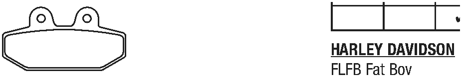 FA71082 × 42 × 10 mm |
| Harley-Davidson Forty-Eight (2010–Present) | EBC FA381 · SBS 807 · Brembo 07HD22 · Vesrah VD-9009 | EBC FA387 · SBS 808 · Brembo 07KA21 · Vesrah VD-9010 | 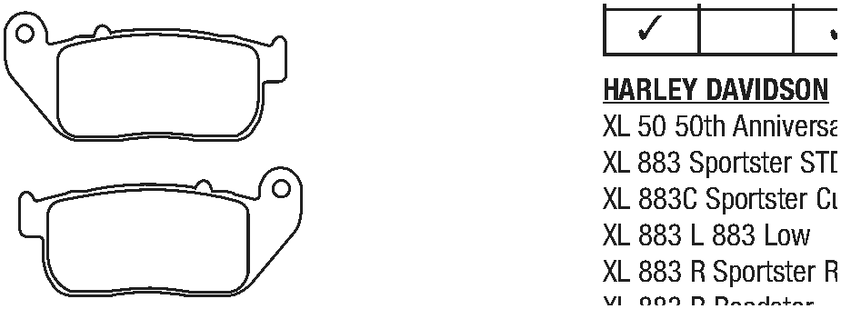 FA381102 × 45.5 × 11 mm FA38786.5 × 44.5 × 10.5 mm FA38786.5 × 44.5 × 10.5 mm |
| Harley-Davidson Heritage Classic (2018–Present) | EBC FA296HH · Brembo 07HD20 | EBC FA710V · SBS 949 · Brembo 07HD23 · Vesrah VD-9086 | FA29675 × 55 × 7.5 mmFA71082 × 42 × 10 mm |
| Harley-Davidson Iron 883 (2009–2022) | EBC FA640 · SBS 934 · Brembo 07HD22 · Vesrah VD-9082 | EBC FA254 · SBS 715/765/984 · Brembo 07KA21 · Vesrah VD-436 | 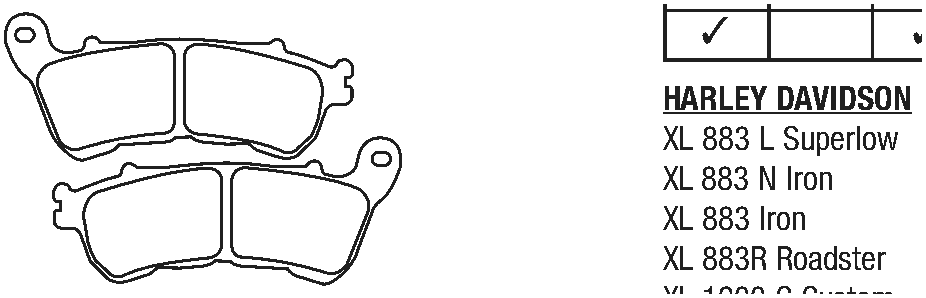 FA640118 × 48.5 × 9.5 mmFA25460 × 57 × 8 mm |
| Harley-Davidson Low Rider S (2020–Present) | EBC FA296HH | EBC FA710V · SBS 949 · Vesrah VD-9086 | FA29675 × 55 × 7.5 mmFA71082 × 42 × 10 mm |
| Harley-Davidson Nightster (2022–Present) | Brembo 07HD17 | — | — |
| Harley-Davidson Pan America 1250 (2021–Present) | EBC FA630HH · SBS 900 · Vesrah VD-9070 | EBC FA213 | FA63085 × 50.5 × 8 mmFA21378 × 41.5 × 9 mm |
| Harley-Davidson Road Glide (2017–Present) | EBC FA409 · SBS 830 · Vesrah VD-9025 | EBC FA409 · SBS 830 · Vesrah VD-9025 |  FA40992 × 58.5 × 7 mmFA40992 × 58.5 × 7 mm FA40992 × 58.5 × 7 mmFA40992 × 58.5 × 7 mm |
| Harley-Davidson Road King (2017–Present) | EBC FA409 · SBS 830 · Vesrah VD-9025 | EBC FA409 · SBS 830 · Vesrah VD-9025 | FA40992 × 58.5 × 7 mmFA40992 × 58.5 × 7 mm |
| Harley-Davidson Street 750 (2014–2021) | EBC FA209/2 · SBS 176/674/1005 · Vesrah VD-958 | EBC FA181X · SBS 671/1003 · Vesrah VD-947 | FA209/2109 × 40.5 × 7.5 mm |
| Harley-Davidson Street Bob (2013-2016) | Brembo 07HD15 | Brembo 07HD07 | — |
| Harley-Davidson Street Glide (2017–Present) | EBC FA409 · SBS 830 · Vesrah VD-9025 | EBC FA409 · SBS 830 · Vesrah VD-9025 | FA40992 × 58.5 × 7 mmFA40992 × 58.5 × 7 mm |
| Harley-Davidson Street Rod (2017-2021) | EBC FA209/2 · SBS 176/674/1005 · Brembo 07BB03 · Vesrah VD-958 | EBC FA181X · SBS 671/1003 · Brembo 07BB04 · Vesrah VD-947 | FA209/2109 × 40.5 × 7.5 mm |
| Honda 919 (2002) | EBC FA187 · SBS 622HS | EBC FA174 · SBS 657LS |  FA18768 × 54 × 8 mm FA18768 × 54 × 8 mm FA17486 × 40 × 10 mm FA17486 × 40 × 10 mm |
| Honda ADV 350 (2022–Present) | EBC FA196 · SBS 183MS | SBS 193MS | FA196102 × 39 × 10 mm |
| Honda Africa Twin CRF1100L (2020–Present) | SBS 940HS | EBC FA174 · SBS 657LS | FA17486 × 40 × 10 mm |
| Honda ATC 200 X (1983–1987) | EBC FA84 · SBS 592SI | EBC FA84 · SBS 562SI | FA8446 × 45 × 8 mmFA8446 × 45 × 8 mm |
| Honda ATC 250 R (1981–1986) | EBC FA54 · SBS 536SI | SBS 2014 |  FA5441 × 45 × 8 mm FA5441 × 45 × 8 mm |
| Honda ATC 250 X (1985) | EBC FA92 · SBS 558SI | EBC FA84 · SBS 562SI |  FA9281 × 42 × 7.5 mmFA8446 × 45 × 8 mm FA9281 × 42 × 7.5 mmFA8446 × 45 × 8 mm |
| Honda ATC 350 Odyssey (1985) | EBC FA92 · SBS 558SI | EBC FA84 · SBS 562SI | FA9281 × 42 × 7.5 mmFA8446 × 45 × 8 mm |
| Honda ATC 350 X (1985–1989) | EBC FA92 · SBS 558SI | EBC FA84 · SBS 562SI | FA9281 × 42 × 7.5 mmFA8446 × 45 × 8 mm |
| Honda CA 250 Rebel (1990–1995) | EBC FA165 · SBS 638HF | SBS 2058 | FA16597 × 42 × 7.5 mm |
| Honda CB-1 400 (CB 400 F) (1989–1990) | EBC FA142 · SBS 627HS | EBC FA140 · SBS 614LS |  FA142102 × 39 × 9 mm FA142102 × 39 × 9 mm FA14086.5 × 39.5 × 10.5 mm FA14086.5 × 39.5 × 10.5 mm |
| Honda CB 1000 C (1983–1984) | EBC FA69 · SBS 542HF | — |  FA6989.5 × 49 × 10 mm FA6989.5 × 49 × 10 mm |
| Honda CB 1000 F (Big One) (1993–1997) | EBC FA187 · SBS 622HS | EBC FA174 · SBS 657LS | FA18768 × 54 × 8 mmFA17486 × 40 × 10 mm |
| Honda CB 1100 (2013–2021) | EBC FA388 · SBS 828HS | EBC FA174 · SBS 657LS | 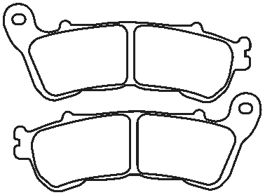 FA388118 × 45 × 8.5 mmFA17486 × 40 × 10 mm |
| Honda CB 1100 EX (2014–2021) | EBC FA265 · SBS 734HS | EBC FA174 · SBS 657LS |  FA26575 × 55 × 8 mmFA17486 × 40 × 10 mm FA26575 × 55 × 8 mmFA17486 × 40 × 10 mm |
| Honda CB 1100 F (1983–1985) | EBC FA69 · SBS 542HF | — | FA6989.5 × 49 × 10 mm |
| Honda CB 1100 RS ABS (2017–2021) | SBS 947HS | EBC FA174 · SBS 657LS | FA17486 × 40 × 10 mm |
| Honda CB 1300 (2005–2013) | EBC FA265 · SBS 734HS | EBC FA174 · SBS 657LS | FA26575 × 55 × 8 mmFA17486 × 40 × 10 mm |
| Honda CB 1300 R (2002–2004) | EBC FA265 · SBS 734HS | EBC FA254 · SBS 715LS | FA26575 × 55 × 8 mmFA25460 × 57 × 8 mm |
| Honda CB 1300 S (2011–2015) | EBC FA388 · SBS 828HS | EBC FA174 · SBS 657LS | FA388118 × 45 × 8.5 mmFA17486 × 40 × 10 mm |
| Honda CB 300 (2010) | EBC FA197 · SBS 688HF | — | 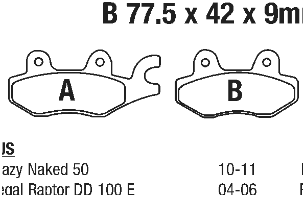 FA19797 × 42 × 9 mm |
| Honda CB 350 F, F1 (1973–1976) | EBC FA13 · SBS 501HF | SBS 2024 |  FA1352 × 13/20 mm FA1352 × 13/20 mm |
| Honda CB 360 G,T (1973–1976) | EBC FA13 · SBS 501HF | SBS 2024 | FA1352 × 13/20 mm |
| Honda CB 400 (1981–1982) | EBC FA69 · SBS 542HF | — | FA6989.5 × 49 × 10 mm |
| Honda CB 400 A (1977–1981) | EBC FA45 · SBS 526HF | SBS 2058 | 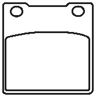 FA4554 × 53 × 11 mm |
| Honda CB 400 F, F1, F2 (1975–1979) | EBC FA13 · SBS 501HF | SBS 2024 | FA1352 × 13/20 mm |
| Honda CB 400 Hawk (1981–1985) | EBC FA69 · SBS 542HF | — | FA6989.5 × 49 × 10 mm |
| Honda CB 400 N,T, Hawk (1978–1982) | EBC FA45 · SBS 526HF | SBS 2058 | FA4554 × 53 × 11 mm |
| Honda CB 400 T1,T2 (1977–1978) | EBC FA45 · SBS 526HF | SBS 2058 | FA4554 × 53 × 11 mm |
| Honda CB 450 K5, K6, K7 (1972–1977) | EBC FA13 · SBS 501HF | SBS 2072 | FA1352 × 13/20 mm |
| Honda CB 450 SC Nighthawk (1982–1986) | EBC FA90 · SBS 561HF | SBS 2058 |  FA9091 × 51.5 × 10 mm FA9091 × 51.5 × 10 mm |
| Honda CB 500 T (1975–1978) | EBC FA13 · SBS 501HF | SBS 2072 | FA1352 × 13/20 mm |
| Honda CB 500 X (2013–Present) | EBC FA196 · SBS 700HS | SBS 881LS | FA196102 × 39 × 10 mm |
| Honda CB 550 F (1975–1979) | EBC FA13 · SBS 501HF | SBS 2072 | FA1352 × 13/20 mm |
| Honda CB 550 K (1974–1978) | EBC FA13 · SBS 501HF | SBS 2072 | FA1352 × 13/20 mm |
| Honda CB 550 SC (1983–1984) | EBC FA69 · SBS 542HF | SBS 2058 | FA6989.5 × 49 × 10 mm |
| Honda CB 599 (2004) | EBC FA142 · SBS 627HS | EBC FA174 · SBS 657LS | FA142102 × 39 × 9 mmFA17486 × 40 × 10 mm |
| Honda CB 600 Hornet ABS (2007–2012) | EBC FA388 · SBS 828HS | EBC FA174 · SBS 657LS | FA388118 × 45 × 8.5 mmFA17486 × 40 × 10 mm |
| Honda CB 650 (1979–1985) | EBC FA45 · SBS 526HF | SBS 2027 | FA4554 × 53 × 11 mm |
| Honda CB 650 C (1980–1985) | EBC FA45 · SBS 526HF | SBS 2027 | FA4554 × 53 × 11 mm |
| Honda CB 650 SC Nighthawk (1983–1985) | EBC FA69 · SBS 542HF | SBS 2059 | FA6989.5 × 49 × 10 mm |
| Honda CB 650 SCC Nighthawk (1982) | EBC FA90 · SBS 561HF | SBS 2027 | FA9091 × 51.5 × 10 mm |
| Honda CB 650 Z (1978–1981) | EBC FA45 · SBS 526HF | SBS 2027 | FA4554 × 53 × 11 mm |
| Honda CB 700 SC (1984–1986) | EBC FA69 · SBS 542HF | SBS 2046 | FA6989.5 × 49 × 10 mm |
| Honda CB 750 A (1976–1978) | EBC FA13 · SBS 501HF | SBS 2027 | FA1352 × 13/20 mm |
| Honda CB 750 C (1980–1984) | EBC FA45 · SBS 526HF | SBS 2027 | FA4554 × 53 × 11 mm |
| Honda CB 750 C, F, FII, K (1985–1986) | EBC FA69 · SBS 542HF | SBS 2027 | FA6989.5 × 49 × 10 mm |
| Honda CB 750 F (1977–1982) | EBC FA31 · SBS 517HF | EBC FA69 · SBS 542HF |  FA3167 × 49 × 9 mmFA6989.5 × 49 × 10 mm FA3167 × 49 × 9 mmFA6989.5 × 49 × 10 mm |
| Honda CB 750 F1 (1975–1976) | EBC FA13 · SBS 501HF | EBC FA32 · SBS 509HF | FA1352 × 13/20 mm FA3258 × 65.5 × 11 mm FA3258 × 65.5 × 11 mm |
| Honda CB 750 K (1981–1982) | EBC FA69 · SBS 542HF | — | FA6989.5 × 49 × 10 mm |
| Honda CB 750 K Four (1977–1978) | EBC FA13 · SBS 501HF | SBS 2027 | FA1352 × 13/20 mm |
| Honda CB 750 K, L (1979–1980) | EBC FA45 · SBS 526HF | SBS 2027 | FA4554 × 53 × 11 mm |
| Honda CB 750 K0-K6 Four (1970–1976) | EBC FA12 · SBS 502HF | SBS 2027 |  FA1250 × 13/20 mm FA1250 × 13/20 mm |
| Honda CB 750 KZ (1982) | EBC FA69 · SBS 542HF | SBS 2027 | FA6989.5 × 49 × 10 mm |
| Honda CB 750 N, F, Seven Fifty (1992–1995) | EBC FA142 · SBS 627HS | EBC FA174 · SBS 657LS | FA142102 × 39 × 9 mmFA17486 × 40 × 10 mm |
| Honda CB 750 Nighthawk (1991–2002) | EBC FA142 · SBS 627HS | SBS 2059 | FA142102 × 39 × 9 mm |
| Honda CB 750 PZ (1981–1984) | EBC FA45 · SBS 526HF | SBS 2027 | FA4554 × 53 × 11 mm |
| Honda CB 750 SC (1982–1983) | EBC FA69/2 · SBS 572HF | SBS 2027 |  FA69/289.5 × 49.5 × 9 mm FA69/289.5 × 49.5 × 9 mm |
| Honda CB 750 SS (1977–1979) | EBC FA29 · SBS 508HF | EBC FA31 · SBS 517HF | 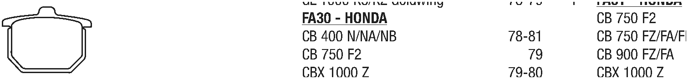 FA2967 × 49 × 11 mmFA3167 × 49 × 9 mm |
| Honda CB 900 C (1982) | EBC FA69 · SBS 542HF | — | FA6989.5 × 49 × 10 mm |
| Honda CB 900 F (1978–1980) | EBC FA31 · SBS 517HF | — | FA3167 × 49 × 9 mm |
| Honda CB 900 F, F2 (1981–1984) | EBC FA69/2 · SBS 572HF | EBC FA69 · SBS 542HF | FA69/289.5 × 49.5 × 9 mmFA6989.5 × 49 × 10 mm |
| Honda CB1000R (2018–Present) | EBC FA700HH · SBS 947 · Brembo 07HO63 · Vesrah VD-189 | EBC FA488HH · SBS 862 · Brembo 07HO13 · Vesrah VD-178 | 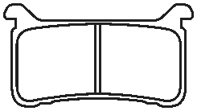 FA70078 × 42.5 × 8 mm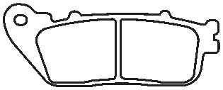 FA48899.5 × 38 × 9 mm |
| Honda CB125R (2018–Present) | Brembo 07HO62 | Brembo 07HO61 | — |
| Honda CB300R (2018–Present) | EBC FA679HH · SBS 241/940 · Vesrah VD-187 | EBC FA629 · SBS 915 · Vesrah VD-182 | 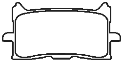 FA67983 × 39.5 × 8 mm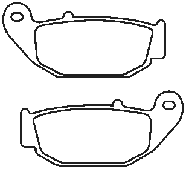 FA62988 × 40 × 10 mm |
| Honda CB500F (2022–Present) | EBC FA760 · SBS 994HS | SBS 881LS |  FA76083 × 49 × 8 mm FA76083 × 49 × 8 mm |
| Honda CB650F (2013-2016) | EBC FA142 · SBS 183/242/627 · Brembo 07HO30 · Vesrah VD-156 | EBC FA496 · SBS 881 · Brembo 07HO53 · Vesrah VD-147/2 | FA142102 × 39 × 9 mm 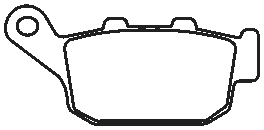 FA49686 × 40 × 9 mm |
| Honda CB650F (2017-2018) | EBC FA142 · SBS 183/242/627 · Brembo 07HO30 · Vesrah VD-156 | EBC FA496 · SBS 881 · Brembo 07HO53 · Vesrah VD-147/2 | FA142102 × 39 × 9 mmFA49686 × 40 × 9 mm |
| Honda CB650R (2019–Present) | EBC FA679HH · SBS 241/940 · Vesrah VD-187 | EBC FA496 · SBS 881 · Vesrah VD-147/2 | FA67983 × 39.5 × 8 mmFA49686 × 40 × 9 mm |
| Honda CB750 Hornet (2023–Present) | Brembo 07HO72 | Brembo 07HO52 | — |
| Honda CBF 250 (2004–2008) | EBC FA197 · SBS 688HF | — | FA19797 × 42 × 9 mm |
| Honda CBR 1000 F (1987–1992) | EBC FA124 · SBS 600HS | EBC FA69 · SBS 542LS | 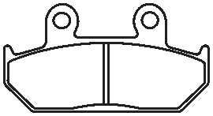 FA12488 × 46.5 × 8.5 mmFA6989.5 × 49 × 10 mm |
| Honda CBR 1000 F, FP (1993–1999) | EBC FA189 · SBS 685HS | EBC FA189 · SBS 685LS | 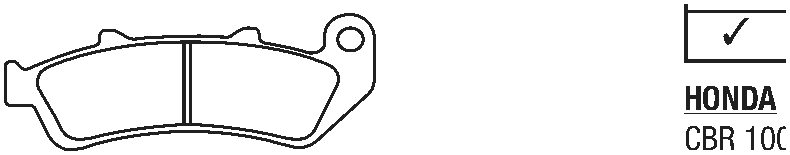 FA189125.5 × 44 × 9 mmFA189125.5 × 44 × 9 mm |
| Honda CBR 1000 RR-R SP Fireblade (2020–2022) | SBS 901HS | EBC FA266 · SBS 730LS | FA26651.5 × 54.5 × 7.5 mm |
| Honda CBR 1000 RR SP (2014–2022) | SBS 901HS | EBC FA436 · SBS 834LS | 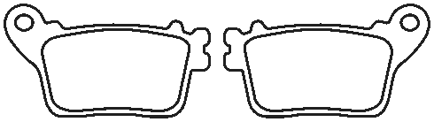 FA43677.5 × 42 × 9 mm |
| Honda CBR 1000 RR SP2 (2017–2019) | SBS 901HS | EBC FA436 · SBS 834LS | FA43677.5 × 42 × 9 mm |
| Honda CBR 250 R ABS (Nissin cal) (2011–2013) | EBC FA388 · SBS 828HS | SBS 881LS | FA388118 × 45 × 8.5 mm |
| Honda CBR 250 R (Nissin cal) (2011–2013) | EBC FA142 · SBS 627HS | SBS 881LS | FA142102 × 39 × 9 mm |
| Honda CBR 250 RR (2017–2021) | EBC FA196 · SBS 700HS | SBS 881LS | FA196102 × 39 × 10 mm |
| Honda CBR 300 F (2014–2016) | EBC FA196 · SBS 700HS | SBS 881LS | FA196102 × 39 × 10 mm |
| Honda CBR 300 F ABS (2014–2017) | EBC FA196 · SBS 700HS | SBS 881LS | FA196102 × 39 × 10 mm |
| Honda CBR 300 R (2014–2021) | EBC FA196 · SBS 700HS | SBS 881LS | FA196102 × 39 × 10 mm |
| Honda CBR 600 F (2011–2013) | EBC FA142 · SBS 627HS | EBC FA436 · SBS 834LS | FA142102 × 39 × 9 mmFA43677.5 × 42 × 9 mm |
| Honda CBR 600 F ABS (2011–2013) | EBC FA388 · SBS 828HS | EBC FA174 · SBS 657LS | FA388118 × 45 × 8.5 mmFA17486 × 40 × 10 mm |
| Honda CBR 600 F Hurricane (1987–1990) | EBC FA121 · SBS 593HS | EBC FA69 · SBS 542LS | 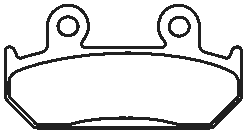 FA12181 × 42 × 9 mmFA6989.5 × 49 × 10 mm |
| Honda CBR 600 F, Super Sport (1991–1994) | EBC FA121 · SBS 593HS | EBC FA174 · SBS 657LS | FA12181 × 42 × 9 mmFA17486 × 40 × 10 mm |
| Honda CBR 600 F3 (1995–1998) | EBC FA142 · SBS 627HS | EBC FA174 · SBS 657LS | FA142102 × 39 × 9 mmFA17486 × 40 × 10 mm |
| Honda CBR 600 F4, F4 Sport (1999–2006) | EBC FA265 · SBS 734HS | EBC FA174 · SBS 657LS | FA26575 × 55 × 8 mmFA17486 × 40 × 10 mm |
| Honda CBR 900 RR Fireblade (1992–2003) | EBC FA187 · SBS 622HS | EBC FA174 · SBS 657LS | FA18768 × 54 × 8 mmFA17486 × 40 × 10 mm |
| Honda CBR 929 RR (2000–2001) | EBC FA265 · SBS 734HS | EBC FA174 · SBS 657LS | FA26575 × 55 × 8 mmFA17486 × 40 × 10 mm |
| Honda CBR 954 RR (2002–2003) | EBC FA265 · SBS 734HS | EBC FA174 · SBS 657LS | FA26575 × 55 × 8 mmFA17486 × 40 × 10 mm |
| Honda CBR1000RR (2004-2005) | EBC FA390HH · SBS 809 · Brembo 07HO50 · Vesrah VD-170 | EBC FA174 · SBS 657 · Brembo 07HO36 · Vesrah VD-163 |  FA39074.5 × 47 × 8 mmFA17486 × 40 × 10 mm FA39074.5 × 47 × 8 mmFA17486 × 40 × 10 mm |
| Honda CBR1000RR (2006-2007) | EBC FA390HH · SBS 809 · Brembo 07HO50 · Vesrah VD-170 | EBC FA436 · SBS 834/991 · Brembo 07HO59 · Vesrah VD-174 | FA39074.5 × 47 × 8 mmFA43677.5 × 42 × 9 mm |
| Honda CBR1000RR (2008-2011) | EBC FA390HH · SBS 809 · Brembo 07HO50 · Vesrah VD-170 | EBC FA436 · SBS 834/991 · Brembo 07HO59 · Vesrah VD-174 | FA39074.5 × 47 × 8 mmFA43677.5 × 42 × 9 mm |
| Honda CBR1000RR (2012-2016) | EBC FA447HH · SBS 841/901 · Brembo 07HO50 · Vesrah VD-9031 | EBC FA436 · SBS 834/991 · Brembo 07HO59 · Vesrah VD-174 | FA447102 × 42 × 7.5 mmFA43677.5 × 42 × 9 mm |
| Honda CBR1000RR (2017-2019) | Brembo 07HO63 | Brembo 07HO59 | — |
| Honda CBR1000RR (2020-Present) | EBC FA757HH · SBS 985 · Vesrah VD-192 | EBC FA266HH · SBS 157/730 · Vesrah VD-964 | FA75780 × 43 × 7.8 mmFA26651.5 × 54.5 × 7.5 mm |
| Honda CBR1000RR-R (2020-2023) | Brembo 07GR99 | Brembo 07BB20 | — |
| Honda CBR500R (2022–Present) | EBC FA760 · SBS 994HS | SBS 881LS | FA76083 × 49 × 8 mm |
| Honda CBR600RR (2013–2017) | EBC FA390HH · SBS 627HS · Brembo 07HO50 · Vesrah VD-170 | EBC FA436 · SBS 834LS · Brembo 07HO59 · Vesrah VD-174 | FA39074.5 × 47 × 8 mmFA43677.5 × 42 × 9 mm |
| Honda CBR650F (2013-2016) | EBC FA142 · SBS 183/242/627 · Brembo 07HO30 · Vesrah VD-156 | EBC FA496 · SBS 881 · Brembo 07HO53 · Vesrah VD-147/2 | FA142102 × 39 × 9 mmFA49686 × 40 × 9 mm |
| Honda CBR650F (2017-2018) | EBC FA142 · SBS 183/242/627 · Brembo 07HO30 · Vesrah VD-156 | EBC FA496 · SBS 881 · Brembo 07HO53 · Vesrah VD-147/2 | FA142102 × 39 × 9 mmFA49686 × 40 × 9 mm |
| Honda CBR650R (2019-2020) | EBC FA679HH · SBS 241/940 · Brembo 07HO62 · Vesrah VD-187 | EBC FA496 · SBS 881 · Brembo 07HO53 · Vesrah VD-147/2 | FA67983 × 39.5 × 8 mmFA49686 × 40 × 9 mm |
| Honda CBR650R (2021-2023) | SBS 940HS | EBC FA496 · SBS 881LS | FA49686 × 40 × 9 mm |
| Honda CBX 1000 (1978–1982) | EBC FA31 · SBS 517HF | EBC FA69/2 · SBS 572HF | FA3167 × 49 × 9 mmFA69/289.5 × 49.5 × 9 mm |
| Honda CBX 550 F, F2 (1982–1986) | EBC FA80 · SBS 552HF | EBC FA80/2 · SBS 571HF |  FA8092 × 53.5 × 8 mm FA8092 × 53.5 × 8 mm FA80/292 × 53.5 × 9.5 mm FA80/292 × 53.5 × 9.5 mm |
| Honda CM 400 A,T,TZ (1979) | EBC FA45 · SBS 526HF | SBS 2058 | FA4554 × 53 × 11 mm |
| Honda CM 400 C (1981) | EBC FA69/2 · SBS 572HF | SBS 2058 | FA69/289.5 × 49.5 × 9 mm |
| Honda CM 400 T (1979–1984) | EBC FA45 · SBS 526HF | SBS 2058 | FA4554 × 53 × 11 mm |
| Honda CM 450 A, C (1982–1986) | EBC FA69 · SBS 542HF | SBS 2058 | FA6989.5 × 49 × 10 mm |
| Honda CMX 250 C Rebel (1996–2000) | EBC FA228 · SBS 713HF | SBS 2069 | FA22896.5 × 42.5 × 9 mm |
| Honda CMX 250 Rebel (1985–2012) | EBC FA86 · SBS 551HF | SBS 2069 | 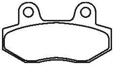 FA8677 × 42 × 7.5 mm |
| Honda CMX 300 Rebel (2017–2018) | EBC FA196 · SBS 700HS | SBS 881LS | FA196102 × 39 × 10 mm |
| Honda CMX 450 Rebel (1986–1988) | EBC FA69 · SBS 542HF | SBS 2058 | FA6989.5 × 49 × 10 mm |
| Honda CMX 500 Rebel (2017–2022) | EBC FA196 · SBS 700HS | SBS 881LS | FA196102 × 39 × 10 mm |
| Honda CMX 500 Rebel S (2020) | EBC FA196 · SBS 700HS | SBS 881LS | FA196102 × 39 × 10 mm |
| Honda CR 125 RE, RF (1984–1985) | EBC FA92 · SBS 558SI | SBS 2042 | FA9281 × 42 × 7.5 mm |
| Honda CR 125 RG (1986) | EBC FA92 · SBS 558SI | SBS 2047 | FA9281 × 42 × 7.5 mm |
| Honda CR 125 RH, RJ, RK (1987–1994) | EBC FA125 · SBS 603RSI | EBC FA131 · SBS 604RSI |  FA12594 × 32 × 7.5 mm FA12594 × 32 × 7.5 mm FA13175 × 36 × 10.5 mm FA13175 × 36 × 10.5 mm |
| Honda CR 250 RE, RF (1984–1985) | EBC FA92 · SBS 558SI | SBS 2042 | FA9281 × 42 × 7.5 mm |
| Honda CR 250 RG (1986) | EBC FA92 · SBS 558SI | SBS 2047 | FA9281 × 42 × 7.5 mm |
| Honda CR 500 R (1987–2001) | EBC FA125 · SBS 603RSI | EBC FA131 · SBS 604RSI | FA12594 × 32 × 7.5 mmFA13175 × 36 × 10.5 mm |
| Honda CR 500 RE, RF (1984–1985) | EBC FA92 · SBS 558SI | SBS 2042 | FA9281 × 42 × 7.5 mm |
| Honda CR 500 RG (1986) | EBC FA92 · SBS 558SI | SBS 2047 | FA9281 × 42 × 7.5 mm |
| Honda CR 80 R (1986–1991) | EBC FA84/2 · SBS 584SI | SBS 2043 |  FA84/246 × 45 × 6.5/8 mm FA84/246 × 45 × 6.5/8 mm |
| Honda CR 80 R, RB (1992–2002) | EBC FA84/2 · SBS 584RSI | EBC FA131 · SBS 604RSI | FA84/246 × 45 × 6.5/8 mmFA13175 × 36 × 10.5 mm |
| Honda CR 85 R, R Expert (2003–2012) | EBC FA84 · SBS 592RSI | EBC FA131 · SBS 604RSI | FA8446 × 45 × 8 mmFA13175 × 36 × 10.5 mm |
| Honda CRE 125 (2002–2007) | EBC FA185 · SBS 694SI | EBC FA346 · SBS 777SI | FA18594 × 33.5 × 7 mm FA34660 × 44 × 11 mm FA34660 × 44 × 11 mm |
| Honda CRE 125 RR (2011) | SBS 859SI | EBC FA346 · SBS 777SI | FA34660 × 44 × 11 mm |
| Honda CRE 250 (2002–2007) | EBC FA185 · SBS 694SI | EBC FA346 · SBS 777SI | FA18594 × 33.5 × 7 mmFA34660 × 44 × 11 mm |
| Honda CRE 450 F (2002–2006) | EBC FA185 · SBS 694SI | EBC FA346 · SBS 777SI | FA18594 × 33.5 × 7 mmFA34660 × 44 × 11 mm |
| Honda CRF 1000 L Africa Twin (2016–2019) | SBS 940HS | EBC FA174 · SBS 657LS | FA17486 × 40 × 10 mm |
| Honda CRF 125 F (2014–Present) | EBC FA185 · SBS 694SI | SBS 2057 | FA18594 × 33.5 × 7 mm |
| Honda CRF 150 F (2003–2006) | EBC FA185 · SBS 694SI | SBS 2013 | FA18594 × 33.5 × 7 mm |
| Honda CRF 150 R (2007–Present) | EBC FA84 · SBS 592RSI | EBC FA346 · SBS 777RSI | FA8446 × 45 × 8 mmFA34660 × 44 × 11 mm |
| Honda CRF 230 (2004–2009) | EBC FA185 · SBS 694SI | SBS 2013 | FA18594 × 33.5 × 7 mm |
| Honda CRF 230 L (2008–2010) | EBC FA185 · SBS 694SI | EBC FA131 · SBS 604SI | FA18594 × 33.5 × 7 mmFA13175 × 36 × 10.5 mm |
| Honda CRF 230 M (2009–2012) | EBC FA185 · SBS 694SI | EBC FA131 · SBS 604SI | FA18594 × 33.5 × 7 mmFA13175 × 36 × 10.5 mm |
| Honda CRF 250 F (2019–Present) | EBC FA185 · SBS 694SI | EBC FA346 · SBS 777SI | FA18594 × 33.5 × 7 mmFA34660 × 44 × 11 mm |
| Honda CRF 250 R (2004–Present) | EBC FA185 · SBS 694RSI | EBC FA346 · SBS 777RSI | FA18594 × 33.5 × 7 mmFA34660 × 44 × 11 mm |
| Honda CRF 250 RX (2019–Present) | EBC FA185 · SBS 694SI | EBC FA346 · SBS 777SI | FA18594 × 33.5 × 7 mmFA34660 × 44 × 11 mm |
| Honda CRF 250 X (2004–2019) | EBC FA185 · SBS 694SI | EBC FA346 · SBS 777SI | FA18594 × 33.5 × 7 mmFA34660 × 44 × 11 mm |
| Honda CRF 450 L (2019–2021) | EBC FA185 · SBS 694RSI | EBC FA346 · SBS 777RSI | FA18594 × 33.5 × 7 mmFA34660 × 44 × 11 mm |
| Honda CRF 450 R-S (2022–Present) | EBC FA185 · SBS 694RSI | EBC FA346 · SBS 777RSI | FA18594 × 33.5 × 7 mmFA34660 × 44 × 11 mm |
| Honda CRF 450 RWE (2019–Present) | EBC FA185 · SBS 694RSI | EBC FA346 · SBS 777RSI | FA18594 × 33.5 × 7 mmFA34660 × 44 × 11 mm |
| Honda CRF 450 RX (2017–Present) | EBC FA185 · SBS 694SI | EBC FA346 · SBS 777SI | FA18594 × 33.5 × 7 mmFA34660 × 44 × 11 mm |
| Honda CRF 450 X (2005–Present) | EBC FA185 · SBS 694SI | EBC FA346 · SBS 777SI | FA18594 × 33.5 × 7 mmFA34660 × 44 × 11 mm |
| Honda CRF300 Rally (2021–Present) | EBC FA465X · SBS 859 · Vesrah VD-181 | EBC FA629X · SBS 915 · Vesrah VD-182 | — |
| Honda CRF300L (2021–Present) | EBC FA465X · SBS 859 · Vesrah VD-181 | EBC FA629X · SBS 915 · Vesrah VD-182 | — |
| Honda CRF450R (2021–Present) | EBC FA185X · SBS 694/807 · Brembo 07KA17 · Vesrah VD-161/VD-181 | EBC FA346X · SBS 777 · Brembo 07HO48 · Vesrah VD-168 | — |
| Honda CTX 1300 (2014–2018) | EBC FA388 · SBS 828HS | EBC FA196 · SBS 630LS | FA388118 × 45 × 8.5 mmFA196102 × 39 × 10 mm |
| Honda CTX 200 (2004–2006) | EBC FA185 · SBS 694SI | SBS 2013 | FA18594 × 33.5 × 7 mm |
| Honda CTX 700 (2014–2018) | EBC FA196 · SBS 700HS | SBS 881LS | FA196102 × 39 × 10 mm |
| Honda CTX 700 D ABS w/DCT (2013–2015) | EBC FA196 · SBS 700HS | SBS 881LS | FA196102 × 39 × 10 mm |
| Honda CTX 700 N (2014–2018) | EBC FA196 · SBS 700HS | SBS 881LS | FA196102 × 39 × 10 mm |
| Honda CTX 700 ND ABS w/DCT (2014–2015) | EBC FA196 · SBS 700HS | SBS 881LS | FA196102 × 39 × 10 mm |
| Honda CX 500 (1978–1981) | EBC FA31 · SBS 517HF | SBS 2059 | FA3167 × 49 × 9 mm |
| Honda CX 500 C (1981–1982) | EBC FA69 · SBS 542HF | SBS 2059 | FA6989.5 × 49 × 10 mm |
| Honda CX 500 Silver W.,Turbo (1983–1985) | EBC FA69 · SBS 542HF | — | FA6989.5 × 49 × 10 mm |
| Honda CX 500 Turbo (1982–1983) | EBC FA69 · SBS 542HF | EBC FA69/2 · SBS 572HF | FA6989.5 × 49 × 10 mmFA69/289.5 × 49.5 × 9 mm |
| Honda CX 650 C (1983–1986) | EBC FA69 · SBS 542HF | SBS 2059 | FA6989.5 × 49 × 10 mm |
| Honda CX 650 E (1983–1986) | EBC FA69/2 · SBS 572HF | EBC FA69 · SBS 542HF | FA69/289.5 × 49.5 × 9 mmFA6989.5 × 49 × 10 mm |
| Honda CX 650 Turbo (1983–1986) | EBC FA69 · SBS 542HF | — | FA6989.5 × 49 × 10 mm |
| Honda DN-01 680 (2008–2011) | EBC FA388 · SBS 828HS | EBC FA196 · SBS 630LS | FA388118 × 45 × 8.5 mmFA196102 × 39 × 10 mm |
| Honda FL 250 Odyssey (1977–1984) | EBC FA40 · SBS 525HF | SBS 2019 | FA4041 × 21 mm |
| Honda FMX 650 Rally (2005–2008) | EBC FA142 · SBS 627HS | EBC FA140 · SBS 614LS | FA142102 × 39 × 9 mmFA14086.5 × 39.5 × 10.5 mm |
| Honda FT 500 (1982–1984) | EBC FA69 · SBS 542HF | — | FA6989.5 × 49 × 10 mm |
| Honda GB 500 T.T. (1988–1992) | EBC FA69 · SBS 542HF | SBS 2059 | FA6989.5 × 49 × 10 mm |
| Honda GL 1000 Gold Wing (1981) | EBC FA31 · SBS 517HF | — | FA3167 × 49 × 9 mm |
| Honda GL 1000 Gr.Tour. Gold Wing (1981–1982) | EBC FA31 · SBS 517HF | — | FA3167 × 49 × 9 mm |
| Honda GL 1000 K1, K2 Gold Wing (1975–1977) | EBC FA29 · SBS 508HF | EBC FA32 · SBS 509HF | FA2967 × 49 × 11 mmFA3258 × 65.5 × 11 mm |
| Honda GL 1000 K3 Gold Wing (1978–1979) | EBC FA31 · SBS 517HF | EBC FA32 · SBS 509HF | FA3167 × 49 × 9 mmFA3258 × 65.5 × 11 mm |
| Honda GL 1100 -1, DLX Gold Wing (1981–1987) | EBC FA69 · SBS 542HF | — | FA6989.5 × 49 × 10 mm |
| Honda GL 1100 A Gold Wing (1979–1983) | EBC FA31 · SBS 517HF | — | FA3167 × 49 × 9 mm |
| Honda GL 1100 Gold Wing (1982–1983) | EBC FA69/2 · SBS 572HF | EBC FA69 · SBS 542HF | FA69/289.5 × 49.5 × 9 mmFA6989.5 × 49 × 10 mm |
| Honda GL 1200 A, I Gold Wing (1984–1986) | EBC FA69/2 · SBS 572HF | EBC FA69 · SBS 542HF | FA69/289.5 × 49.5 × 9 mmFA6989.5 × 49 × 10 mm |
| Honda GL 1200 DX Gold Wing (1986–1987) | EBC FA69/2 · SBS 572HF | EBC FA69 · SBS 542HF | FA69/289.5 × 49.5 × 9 mmFA6989.5 × 49 × 10 mm |
| Honda GL 1200 Gold Wing (1984–1986) | EBC FA69/2 · SBS 572HF | EBC FA69 · SBS 542HF | FA69/289.5 × 49.5 × 9 mmFA6989.5 × 49 × 10 mm |
| Honda GL 1500 Gold Wing, Gold Wing SE (1988–1999) | EBC FA124/2 · SBS 647HS | EBC FA69 · SBS 542LS |  FA124/288 × 46.5 × 10 mmFA6989.5 × 49 × 10 mm FA124/288 × 46.5 × 10 mmFA6989.5 × 49 × 10 mm |
| Honda GL 1500 Valkyrie (1996–2003) | EBC FA142 · SBS 627HS | EBC FA196 · SBS 630LS | FA142102 × 39 × 9 mmFA196102 × 39 × 10 mm |
| Honda GL 1800 C Valkyrie (2014–2015) | EBC FA265 · SBS 734HS | SBS 880LS | FA26575 × 55 × 8 mm |
| Honda GL 500 (1982) | EBC FA69/2 · SBS 572HF | EBC FA69 · SBS 542HF | FA69/289.5 × 49.5 × 9 mmFA6989.5 × 49 × 10 mm |
| Honda GL 500 D (1981–1982) | EBC FA69 · SBS 542HF | SBS 2059 | FA6989.5 × 49 × 10 mm |
| Honda GL 500 I (1981–1982) | EBC FA69/2 · SBS 572HF | SBS 2059 | FA69/289.5 × 49.5 × 9 mm |
| Honda GL 650 D (1983–1984) | EBC FA69 · SBS 542HF | SBS 2059 | FA6989.5 × 49 × 10 mm |
| Honda Gold Wing (2018–Present) | EBC FA717HH · SBS 952 | EBC FA388/2HH · SBS 953 · Vesrah VD-172 | 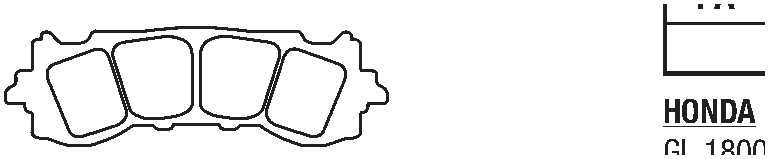 FA717129.5 × 40 × 9 mm FA388/2118 × 45 × 10.5 mm FA388/2118 × 45 × 10.5 mm |
| Honda Grom (2021–Present) | EBC FA375 · SBS 797 · Vesrah VD-177 | EBC FA629 · SBS 915 · Vesrah VD-182 |  FA375111 × 36 × 7.5 mmFA62988 × 40 × 10 mm FA375111 × 36 × 7.5 mmFA62988 × 40 × 10 mm |
| Honda Interstate, SE (1994–2000) | EBC FA124/2 · SBS 647HS | EBC FA69 · SBS 542LS | FA124/288 × 46.5 × 10 mmFA6989.5 × 49 × 10 mm |
| Honda Monkey 125 (2018–Present) | Brembo 07HO56 | Brembo 07HO49 | — |
| Honda MT 125 R (1977–1978) | EBC FA40 · SBS 525HF | SBS 2013 | FA4041 × 21 mm |
| Honda MTX 250 R (1986) | EBC FA92 · SBS 558SI | — | FA9281 × 42 × 7.5 mm |
| Honda NC 700 D Integra (2012–2013) | EBC FA388 · SBS 828HS | EBC FA174 · SBS 657LS | FA388118 × 45 × 8.5 mmFA17486 × 40 × 10 mm |
| Honda NC 700 S (2012–2013) | EBC FA142 · SBS 627HS | EBC FA140 · SBS 614LS | FA142102 × 39 × 9 mmFA14086.5 × 39.5 × 10.5 mm |
| Honda NC 700 SA ABS (2012–2013) | EBC FA388 · SBS 828HS | EBC FA174 · SBS 657LS | FA388118 × 45 × 8.5 mmFA17486 × 40 × 10 mm |
| Honda NC 700 SD ABS (2012–2013) | EBC FA388 · SBS 828HS | EBC FA174 · SBS 657LS | FA388118 × 45 × 8.5 mmFA17486 × 40 × 10 mm |
| Honda NC 700 X (2012–2013) | EBC FA142 · SBS 627HS | EBC FA140 · SBS 614LS | FA142102 × 39 × 9 mmFA14086.5 × 39.5 × 10.5 mm |
| Honda NC 700 XA ABS (2012–2013) | EBC FA388 · SBS 828HS | EBC FA174 · SBS 657LS | FA388118 × 45 × 8.5 mmFA17486 × 40 × 10 mm |
| Honda NC 700 XD ABS (2012–2013) | EBC FA388 · SBS 828HS | EBC FA174 · SBS 657LS | FA388118 × 45 × 8.5 mmFA17486 × 40 × 10 mm |
| Honda NC 750 D Integra (2014–2019) | EBC FA196 · SBS 700HS | SBS 881LS | FA196102 × 39 × 10 mm |
| Honda NC 750 Integra (2016–2018) | EBC FA196 · SBS 700HS | SBS 881LS | FA196102 × 39 × 10 mm |
| Honda NC 750 Integra Dct ABS (2014–2019) | EBC FA196 · SBS 700HS | SBS 881LS | FA196102 × 39 × 10 mm |
| Honda NC 750 S w/DCT (2014–2021) | EBC FA196 · SBS 700HS | SBS 881LS | FA196102 × 39 × 10 mm |
| Honda NC 750 X w/DCT (2014–2019) | EBC FA196 · SBS 700HS | SBS 881LS | FA196102 × 39 × 10 mm |
| Honda NC 750 XAE (2014–2019) | EBC FA196 · SBS 700HS | SBS 881LS | FA196102 × 39 × 10 mm |
| Honda NC750X (2021–Present) | EBC FA196 · SBS 654/700 · Vesrah VD-156/2 | EBC FA496 · SBS 881 · Vesrah VD-147/2 | FA196102 × 39 × 10 mmFA49686 × 40 × 9 mm |
| Honda NM4 700 Vultus ABS w/DCT (2015) | EBC FA196 · SBS 700HS | SBS 881LS | FA196102 × 39 × 10 mm |
| Honda NSF 100 (2006) | EBC FA197 · SBS 688DC | EBC FA131 · SBS 604HF | FA19797 × 42 × 9 mmFA13175 × 36 × 10.5 mm |
| Honda NSR 150 (2002) | EBC FA197 · SBS 688HF | EBC FA135 · SBS 611HF | FA19797 × 42 × 9 mmFA13597 × 42 × 7.5 mm |
| Honda NT 1100 (2022) | SBS 940HS | EBC FA174 · SBS 657LS | FA17486 × 40 × 10 mm |
| Honda NT 650 Hawk GT (1988–1991) | EBC FA142 · SBS 627HS | EBC FA140 · SBS 614LS | FA142102 × 39 × 9 mmFA14086.5 × 39.5 × 10.5 mm |
| Honda NT 650 V Deauville (1998–2005) | SBS 674HS | EBC FA140 · SBS 614LS | FA14086.5 × 39.5 × 10.5 mm |
| Honda NT 700 Deauville ABS (2006–2012) | EBC FA388 · SBS 828HS | SBS 736LS | FA388118 × 45 × 8.5 mm |
| Honda NT 700 V Varadero,ABS (2010–2013) | EBC FA388 · SBS 828HS | SBS 736LS | FA388118 × 45 × 8.5 mm |
| Honda NX 250 (1988–1990) | EBC FA125 · SBS 603HF | SBS 2029 | FA12594 × 32 × 7.5 mm |
| Honda NX 650 Dominator J-K (1988–1992) | EBC FA124/2 · SBS 647HS | EBC FA140 · SBS 614LS | FA124/288 × 46.5 × 10 mmFA14086.5 × 39.5 × 10.5 mm |
| Honda PC 800 Pacific Coast (1989–1997) | EBC FA142 · SBS 627HS | SBS 2046 | FA142102 × 39 × 9 mm |
| Honda PCX125 (2021–Present) | EBC SFA693 | EBC 352 | 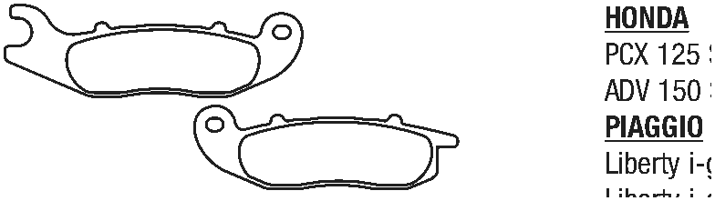 SFA693111 × 36 × 7.5 mm |
| Honda RC213V-S 1000 (2016–2018) | SBS 901HS | EBC FA266 · SBS 730LS | FA26651.5 × 54.5 × 7.5 mm |
| Honda Rebel 500 (2017–Present) | EBC FA196 · SBS 654/700 · Vesrah VD-156/2 | EBC FA496 · SBS 881 · Vesrah VD-147/2 | FA196102 × 39 × 10 mmFA49686 × 40 × 9 mm |
| Honda RS 125 (1995–2003) | EBC FA95 · SBS 566DC | SBS 618RQ | FA9569.5 × 51 × 8 mm |
| Honda RS 125 R (1991–1994) | EBC FA142 · SBS 627HF | SBS 618HF | FA142102 × 39 × 9 mm |
| Honda RS 250 R (1991–1993) | EBC FA187 · SBS 622DC | EBC FA140 · SBS 614HF | FA18768 × 54 × 8 mmFA14086.5 × 39.5 × 10.5 mm |
| Honda RVF 400 RR (NC35) (1990–1996) | EBC FA187 · SBS 622HF | EBC FA143 · SBS 623HF | FA18768 × 54 × 8 mm FA14394 × 32 × 10 mm FA14394 × 32 × 10 mm |
| Honda RVT 1000 RC51 (2000–2006) | EBC FA265 · SBS 734HS | EBC FA174 · SBS 657LS | FA26575 × 55 × 8 mmFA17486 × 40 × 10 mm |
| Honda SL 230 (1997–2001) | EBC FA185 · SBS 694HF | EBC FA131 · SBS 604HF | FA18594 × 33.5 × 7 mmFA13175 × 36 × 10.5 mm |
| Honda Sports (2018–2021) | SBS 940HS | EBC FA174 · SBS 657LS | FA17486 × 40 × 10 mm |
| Honda ST 1100 ABS-TCS (1992–1995) | EBC FA142 · SBS 627HS | EBC FA196 · SBS 654LS | FA142102 × 39 × 9 mmFA196102 × 39 × 10 mm |
| Honda Super Cub C125 (2018–Present) | EBC FA691 · SBS 925 · Vesrah VD-186 | EBC 352 | 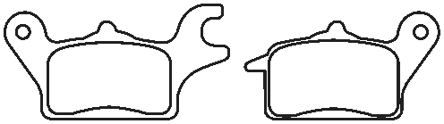 FA69185 × 44.5 × 7 mm |
| Honda VF 1000 F, FII (1984–1986) | EBC FA69 · SBS 542HF | — | FA6989.5 × 49 × 10 mm |
| Honda VF 1000 R (1984–1987) | EBC FA69 · SBS 542HF | — | FA6989.5 × 49 × 10 mm |
| Honda VF 1100 C (1983–1986) | EBC FA69/2 · SBS 572HF | EBC FA69 · SBS 542HF | FA69/289.5 × 49.5 × 9 mmFA6989.5 × 49 × 10 mm |
| Honda VF 1100 S (1984–1985) | EBC FA69/2 · SBS 572HF | EBC FA69 · SBS 542HF | FA69/289.5 × 49.5 × 9 mmFA6989.5 × 49 × 10 mm |
| Honda VF 500 F, FII (1984–1986) | EBC FA69 · SBS 542HF | — | FA6989.5 × 49 × 10 mm |
| Honda VF 700 C Magna (1984–1987) | EBC FA69 · SBS 542HF | SBS 2059 | FA6989.5 × 49 × 10 mm |
| Honda VF 700 F Interceptor (1984–1985) | EBC FA69/2 · SBS 572HF | EBC FA69 · SBS 542HF | FA69/289.5 × 49.5 × 9 mmFA6989.5 × 49 × 10 mm |
| Honda VF 700 S (1984–1985) | EBC FA69 · SBS 542HF | SBS 2059 | FA6989.5 × 49 × 10 mm |
| Honda VF 750 C (1982–1984) | EBC FA69 · SBS 542HF | SBS 2059 | FA6989.5 × 49 × 10 mm |
| Honda VF 750 C, CD Magna (1994–1998) | EBC FA196 · SBS 630HS | SBS 2046 | FA196102 × 39 × 10 mm |
| Honda VF 750 C, Magna (1988–1993) | EBC FA69 · SBS 542HF | SBS 2046 | FA6989.5 × 49 × 10 mm |
| Honda VF 750 F (1983–1984) | EBC FA69 · SBS 542HF | — | FA6989.5 × 49 × 10 mm |
| Honda VF 750 Sport (1982–1983) | EBC FA69 · SBS 542HF | SBS 2059 | FA6989.5 × 49 × 10 mm |
| Honda VFR 1200 XC Crosstourer (2012–2019) | EBC FA388 · SBS 828HS | SBS 892LS | FA388118 × 45 × 8.5 mm |
| Honda VFR 1200 XDC Crosstourer w/DCT (2012–2019) | EBC FA388 · SBS 828HS | SBS 892LS | FA388118 × 45 × 8.5 mm |
| Honda VFR 700 F, F2 (1986–1987) | EBC FA124 · SBS 600HS | EBC FA69 · SBS 542LS | FA12488 × 46.5 × 8.5 mmFA6989.5 × 49 × 10 mm |
| Honda VFR 700 F Interceptor (1988–1989) | EBC FA142 · SBS 627HS | EBC FA140 · SBS 614LS | FA142102 × 39 × 9 mmFA14086.5 × 39.5 × 10.5 mm |
| Honda VFR 750 F (1986–1998) | EBC FA124 · SBS 600HS | EBC FA69 · SBS 542LS | FA12488 × 46.5 × 8.5 mmFA6989.5 × 49 × 10 mm |
| Honda VFR 750 R (1988–1993) | EBC FA187 · SBS 622HS | EBC FA143 · SBS 623LS | FA18768 × 54 × 8 mmFA14394 × 32 × 10 mm |
| Honda VFR 800 Crossrunner (2011–2013) | EBC FA388 · SBS 828HS | SBS 862LS | FA388118 × 45 × 8.5 mm |
| Honda VFR 800 F (2014–2019) | EBC FA390 · SBS 809HS | SBS 862LS | FA39074.5 × 47 × 8 mm |
| Honda VFR 800 Interceptor ABS (2006–2018) | EBC FA388 · SBS 828HS | SBS 736LS | FA388118 × 45 × 8.5 mm |
| Honda VFR 800 X Crossrunner (2015–2018) | EBC FA390 · SBS 809HS | SBS 862LS | FA39074.5 × 47 × 8 mm |
| Honda VT 1100 C Shadow (1987–1996) | EBC FA69 · SBS 542HF | SBS 2046 | FA6989.5 × 49 × 10 mm |
| Honda VT 1100 C2 Shadow A.C.E. (1995–2004) | EBC FA142 · SBS 627HS | EBC FA174 · SBS 657LS | FA142102 × 39 × 9 mmFA17486 × 40 × 10 mm |
| Honda VT 1100 C2 Shadow Sabre (2000–2005) | EBC FA142 · SBS 627HS | EBC FA174 · SBS 657LS | FA142102 × 39 × 9 mmFA17486 × 40 × 10 mm |
| Honda VT 1100 C3 Shadow Aero (1998–2004) | EBC FA142 · SBS 627HS | EBC FA174 · SBS 657LS | FA142102 × 39 × 9 mmFA17486 × 40 × 10 mm |
| Honda VT 1100 T Shadow (1998–2004) | EBC FA142 · SBS 627HS | EBC FA174 · SBS 657LS | FA142102 × 39 × 9 mmFA17486 × 40 × 10 mm |
| Honda VT 1300 CX A Fury (2010–2022) | EBC FA142 · SBS 627HS | EBC FA174 · SBS 657LS | FA142102 × 39 × 9 mmFA17486 × 40 × 10 mm |
| Honda VT 1300 CXA A Fury ABS (2010–2022) | EBC FA388 · SBS 828HS | SBS 736LS | FA388118 × 45 × 8.5 mm |
| Honda VT 1300 Interstate (2011–2015) | EBC FA142 · SBS 627HS | EBC FA174 · SBS 657LS | FA142102 × 39 × 9 mmFA17486 × 40 × 10 mm |
| Honda VT 1300 Sabre (2011–2013) | EBC FA142 · SBS 627HS | EBC FA174 · SBS 657LS | FA142102 × 39 × 9 mmFA17486 × 40 × 10 mm |
| Honda VT 1300 Stateline (2011–2016) | EBC FA142 · SBS 627HS | EBC FA174 · SBS 657LS | FA142102 × 39 × 9 mmFA17486 × 40 × 10 mm |
| Honda VT 500 C Shadow (1983–1986) | EBC FA69 · SBS 542HF | SBS 2058 | FA6989.5 × 49 × 10 mm |
| Honda VT 500 ED (1982) | EBC FA80 · SBS 552HF | SBS 2058 | FA8092 × 53.5 × 8 mm |
| Honda VT 600 C, Shadow (1988–2000) | EBC FA124/2 · SBS 647HS | SBS 2059 | FA124/288 × 46.5 × 10 mm |
| Honda VT 600 CD Shadow VLX (1994–2000) | EBC FA142 · SBS 627HS | SBS 2059 | FA142102 × 39 × 9 mm |
| Honda VT 700 C Shadow (1984–1987) | EBC FA90 · SBS 561HF | SBS 2059 | FA9091 × 51.5 × 10 mm |
| Honda VT 750 Black Widow (2001–2003) | EBC FA196 · SBS 700HS | SBS 2046 | FA196102 × 39 × 10 mm |
| Honda VT 750 C (1983–1985) | EBC FA90 · SBS 561HF | SBS 2059 | FA9091 × 51.5 × 10 mm |
| Honda VT 750 C, Shadow (1986–1996) | EBC FA69 · SBS 542HF | SBS 2046 | FA6989.5 × 49 × 10 mm |
| Honda VT 750 C2 Shadow A.C.E. (1997–2003) | EBC FA196 · SBS 700HS | SBS 2046 | FA196102 × 39 × 10 mm |
| Honda VT 750 C2 Shadow Spirit (2007–2011) | EBC FA196 · SBS 700HS | SBS 2046 | FA196102 × 39 × 10 mm |
| Honda VT 750 C2B (2011–2018) | EBC FA196 · SBS 700HS | — | FA196102 × 39 × 10 mm |
| Honda VT 750 C2B Phantom (2010–2018) | EBC FA196 · SBS 700HS | SBS 2046 | FA196102 × 39 × 10 mm |
| Honda VT 750 C2S ABS (2013–2014) | EBC FA388 · SBS 828HS | EBC FA254 · SBS 715LS | FA388118 × 45 × 8.5 mmFA25460 × 57 × 8 mm |
| Honda VT 750 C4 Shadow (2004–2005) | EBC FA196 · SBS 700HS | SBS 2046 | FA196102 × 39 × 10 mm |
| Honda VT 750 CS ABS (2013–2014) | EBC FA388 · SBS 828HS | EBC FA254 · SBS 715LS | FA388118 × 45 × 8.5 mmFA25460 × 57 × 8 mm |
| Honda VT 750 RS (2011–2013) | EBC FA196 · SBS 700HS | — | FA196102 × 39 × 10 mm |
| Honda VT 750 S (2011–2012) | EBC FA196 · SBS 700HS | — | FA196102 × 39 × 10 mm |
| Honda VT 750 Shadow Aero (2013–2018) | EBC FA196 · SBS 700HS | EBC FA254 · SBS 715LS | FA196102 × 39 × 10 mmFA25460 × 57 × 8 mm |
| Honda VT 800 C (1988–1994) | EBC FA69 · SBS 542HF | SBS 2046 | FA6989.5 × 49 × 10 mm |
| Honda VTR 1000 SP-1, SP-2 (2000–2006) | EBC FA265 · SBS 734HS | EBC FA174 · SBS 657LS | FA26575 × 55 × 8 mmFA17486 × 40 × 10 mm |
| Honda VTR 1000 Super Hawk (1997–2007) | EBC FA187 · SBS 622HS | EBC FA174 · SBS 657LS | FA18768 × 54 × 8 mmFA17486 × 40 × 10 mm |
| Honda VTR 250 (1988–2002) | EBC FA80 · SBS 552HF | SBS 2068 | FA8092 × 53.5 × 8 mm |
| Honda VTX 1300 C (2004–2009) | EBC FA142 · SBS 627HS | EBC FA174 · SBS 657LS | FA142102 × 39 × 9 mmFA17486 × 40 × 10 mm |
| Honda VTX 1300 S (2003–2007) | EBC FA142 · SBS 627HS | EBC FA174 · SBS 657LS | FA142102 × 39 × 9 mmFA17486 × 40 × 10 mm |
| Honda X-ADV 750 (2017–Present) | Brembo 07HO62 | Brembo 07HO53 | — |
| Honda XL 350 R (1984–1987) | EBC FA92 · SBS 558HF | SBS 2029 | FA9281 × 42 × 7.5 mm |
| Honda XL 500 R (1983–1987) | EBC FA92 · SBS 558HF | SBS 2026 | FA9281 × 42 × 7.5 mm |
| Honda XL 600 R (1983–1986) | EBC FA92 · SBS 558HF | SBS 2026 | FA9281 × 42 × 7.5 mm |
| Honda XL 600 V,Transalp (1987–1990) | EBC FA69 · SBS 542HS | SBS 2026 | FA6989.5 × 49 × 10 mm |
| Honda XLR 125 R (1998–2001) | EBC FA185 · SBS 694HF | SBS 2013 | FA18594 × 33.5 × 7 mm |
| Honda XR 125 L (2003–2007) | EBC FA185 · SBS 694HF | SBS 2013 | FA18594 × 33.5 × 7 mm |
| Honda XR 250 L (1991–1997) | EBC FA125 · SBS 603HF | EBC FA131 · SBS 604HF | FA12594 × 32 × 7.5 mmFA13175 × 36 × 10.5 mm |
| Honda XR 250 S (1996–2000) | EBC FA185 · SBS 694HF | EBC FA131 · SBS 604HF | FA18594 × 33.5 × 7 mmFA13175 × 36 × 10.5 mm |
| Honda XR 400 R (1996–2004) | EBC FA185 · SBS 694SI | EBC FA131 · SBS 604SI | FA18594 × 33.5 × 7 mmFA13175 × 36 × 10.5 mm |
| Honda XR 440 R (2000–2003) | EBC FA185 · SBS 694SI | EBC FA131 · SBS 604SI | FA18594 × 33.5 × 7 mmFA13175 × 36 × 10.5 mm |
| Honda XR 600 R (1983–2000) | EBC FA92 · SBS 558SI | SBS 2013 | FA9281 × 42 × 7.5 mm |
| Honda XR 650 L (1993–2018) | EBC FA185 · SBS 694HF | EBC FA131 · SBS 604HF | FA18594 × 33.5 × 7 mmFA13175 × 36 × 10.5 mm |
| Honda XR 650 R (2000–2011) | EBC FA185 · SBS 694SI | EBC FA131 · SBS 604SI | FA18594 × 33.5 × 7 mmFA13175 × 36 × 10.5 mm |
| Husqvarna 701 Supermoto (2016–Present) | — | EBC FA208 | 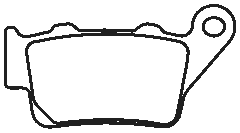 FA20878 × 41 × 9 mm |
| Husqvarna FE 350 (2017–Present) | EBC FA181X · SBS 671/1003 · Brembo 07BB04 · Vesrah VD-947 | EBC FA368X · SBS 791 · Brembo 07BB27 · Vesrah VD-997 | — |
| Husqvarna Norden 901 (2022–Present) | SBS 706HS | EBC FA181 · SBS 671LS | FA18194 × 36.5 × 7.5 mm |
| Husqvarna Svartpilen 401 (2020–Present) | EBC FA606 · SBS 231/877 · Vesrah VD-9068 | EBC FA208X · SBS 175/675 · Vesrah VD-953 | FA60645.5 × 45 × 8.5 mm |
| Husqvarna Vitpilen 401 (2020–Present) | EBC FA606 · SBS 231/877 · Vesrah VD-9068 | EBC FA208X · SBS 175/675 · Vesrah VD-953 | FA60645.5 × 45 × 8.5 mm |
| Indian Challenger (2020–Present) | Brembo 07BB38 | Brembo 07HO31 | — |
| Indian Chief (2022–Present) | EBC FA347 · SBS 782 | SBS 630 |  FA34769.5 × 49.5 × 7 mm FA34769.5 × 49.5 × 7 mm |
| Indian Chieftain (2014–Present) | Brembo 07KA23 | Brembo 07HO31 | — |
| Indian FTR 1200 (2019–Present) | Brembo 07BB38 | Brembo 07BB20 | — |
| Indian Scout (2015–Present) | SBS 929 | EBC FA377 · SBS 930 | FA37794 × 47 × 8.5 mm |
| Indian Scout Bobber (2018–Present) | EBC FA209/2 · SBS 674 | SBS 675 | FA209/2109 × 40.5 × 7.5 mm |
| Indian Scout Sixty (2016–Present) | SBS 929 | EBC FA377 · SBS 930 | FA37794 × 47 × 8.5 mm |
| Kawasaki KLX300 (2021–Present) | EBC FA135X · Brembo 07SU12 | EBC FA131X · SBS 604 · Brembo 07HO26 · Vesrah VD-144 | — |
| Kawasaki KX450 (2024–Present) | Brembo 07BB04 | Brembo 07YA41 | — |
| Kawasaki Ninja 1000SX (2020–Present) | EBC FA379HH · SBS 806 · Brembo 07SU27 · Vesrah VD-355 | EBC FA192 · SBS 687 · Brembo 07KA16 · Vesrah VD-434 |  FA37971.5 × 50.5 × 8 mmFA19289.5 × 51 × 8.5 mm FA37971.5 × 50.5 × 8 mmFA19289.5 × 51 × 8.5 mm |
| Kawasaki Ninja 125 (2019–Present) | EBC FA197 · Brembo 07YA22 | EBC FA197 · Brembo 07YA22 | FA19797 × 42 × 9 mmFA19797 × 42 × 9 mm |
| Kawasaki Ninja 300 (2013-Present) | EBC FA197 | EBC FA197 | FA19797 × 42 × 9 mmFA19797 × 42 × 9 mm |
| Kawasaki Ninja 400 (2018-Present) | SBS 955HS · Brembo 07KA31 | SBS 638LS · Brembo 07YA22 | — |
| Kawasaki Ninja 650 (2017-2020) | EBC FA226 | EBC FA174 · SBS 657 · Vesrah VD-163 | 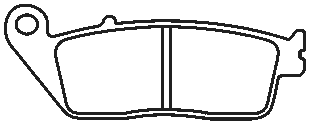 FA226102 × 39 × 9 mmFA17486 × 40 × 10 mm |
| Kawasaki Ninja 650 (2021-Present) | EBC FA226 | EBC FA174 · SBS 657 · Vesrah VD-163 | FA226102 × 39 × 9 mmFA17486 × 40 × 10 mm |
| Kawasaki Ninja H2 (2015–Present) | EBC FA447HH · SBS 841/901 · Brembo 07BB37 · Vesrah VD-9031 | EBC FA266 · SBS 157/730 · Brembo 07BB20 · Vesrah VD-964 | FA447102 × 42 × 7.5 mmFA26651.5 × 54.5 × 7.5 mm |
| Kawasaki Ninja H2 SX (2018–Present) | EBC FA379HH · SBS 806 · Vesrah VD-355 | EBC FA228 | FA37971.5 × 50.5 × 8 mmFA22896.5 × 42.5 × 9 mm |
| Kawasaki Ninja ZX-10R (2016-2020) | EBC FA447HH · SBS 841/901 · Brembo 07BB37 · Vesrah VD-9031 | EBC FA436 · SBS 834/991 · Brembo 07HO59 · Vesrah VD-174 | FA447102 × 42 × 7.5 mmFA43677.5 × 42 × 9 mm |
| Kawasaki Ninja ZX-10R (2021–2025) | Brembo 07BB37 | Brembo 07HO59 | — |
| Kawasaki Ninja ZX-25R (2020–Present) | Brembo 07SU27 | Brembo 07HO36 | — |
| Kawasaki Ninja ZX-4R (2023–Present) | Brembo 07SU27 | Brembo 07HO36 | — |
| Kawasaki Ninja ZX-4RR (2023–Present) | Brembo 07SU27 | Brembo 07HO36 | — |
| Kawasaki Ninja ZX-6R (2009-2012) | Brembo 07KA28 | Brembo 07KA16 | — |
| Kawasaki Ninja ZX-6R (2013-2018) | Brembo 07KA28 | Brembo 07KA16 | — |
| Kawasaki Versys 1000 (2012-2015) | EBC FA158 · SBS 631 · Brembo 07KA13 · Vesrah VD-343 | EBC FA174 · SBS 657 · Brembo 07HO36 · Vesrah VD-163 | 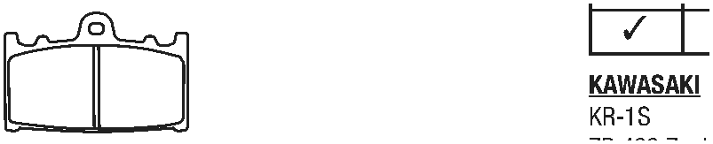 FA15870 × 46 × 8 mmFA17486 × 40 × 10 mm |
| Kawasaki Versys 1000 (2016–2018) | EBC FA158 · SBS 631 · Brembo 07KA13 · Vesrah VD-343 | EBC FA174 · SBS 657 · Brembo 07HO36 · Vesrah VD-163 | FA15870 × 46 × 8 mmFA17486 × 40 × 10 mm |
| Kawasaki Versys 1000 (2019-2021) | EBC FA158 · SBS 631 · Brembo 07SU27 · Vesrah VD-343 | EBC FA174 · SBS 657 · Brembo 07HO36 · Vesrah VD-163 | FA15870 × 46 × 8 mmFA17486 × 40 × 10 mm |
| Kawasaki Versys 650 (2006-2009) | Brembo 07KA19 | EBC FA192 · SBS 687 · Brembo 07KA16 · Vesrah VD-434 | FA19289.5 × 51 × 8.5 mm |
| Kawasaki Versys 650 (2010-2014) | Brembo 07KA19 | EBC FA192 · SBS 687 · Brembo 07KA16 · Vesrah VD-434 | FA19289.5 × 51 × 8.5 mm |
| Kawasaki Versys 650 (2015-2021) | EBC FA142 · SBS 183/242/627 · Brembo 07HO30 · Vesrah VD-156 | EBC FA174 · SBS 657 · Brembo 07HO36 · Vesrah VD-163 | FA142102 × 39 × 9 mmFA17486 × 40 × 10 mm |
| Kawasaki Versys 650 (2022-Present) | Brembo 07HO30 | Brembo 07HO36 | — |
| Kawasaki Versys-X 300 (2017–Present) | EBC FA142 · SBS 183/242/627 · Brembo 07HO30 · Vesrah VD-156 | EBC FA197 · Brembo 07YA22 | FA142102 × 39 × 9 mmFA19797 × 42 × 9 mm |
| Kawasaki Vulcan 900 (2007–Present) | EBC FA229 · SBS 705 · Vesrah VD-352 | EBC FA231/2V · SBS 886/920 · Vesrah VD-435/2 | 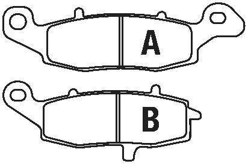 FA229133.5 × 37.5 × 8.5 mm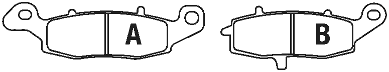 FA231/2133.5 × 37.5 × 10.5 mm |
| Kawasaki Vulcan S (2015–Present) | Brembo 07HO42 | Brembo 07HO36 | — |
| Kawasaki W800 (2019–Present) | Brembo 07KA18 | Brembo 07YA22 | — |
| Kawasaki Z H2 (2020–Present) | Brembo 07BB38 | EBC FA266 · SBS 157/730 · Brembo 07HO36 · Vesrah VD-964 | FA26651.5 × 54.5 × 7.5 mm |
| Kawasaki Z1000 (2014-2016) | EBC FA379HH · SBS 806 · Brembo 07SU27 · Vesrah VD-355 | EBC FA192 · SBS 687 · Brembo 07KA16 · Vesrah VD-434 | FA37971.5 × 50.5 × 8 mmFA19289.5 × 51 × 8.5 mm |
| Kawasaki Z125 (2019–Present) | EBC FA197 · Brembo 07YA22 | EBC FA197 · Brembo 07YA22 | FA19797 × 42 × 9 mmFA19797 × 42 × 9 mm |
| Kawasaki Z400 (2019–Present) | Brembo 07KA31 | Brembo 07YA22 | — |
| Kawasaki Z650 (2017–Present) | EBC FA226 | EBC FA174 · SBS 657 · Vesrah VD-163 | FA226102 × 39 × 9 mmFA17486 × 40 × 10 mm |
| Kawasaki Z650RS (2022–Present) | Brembo 07HO30 | Brembo 07HO36 | — |
| Kawasaki Z800 (2013-2016) | Brembo 07KA23 | Brembo 07HO53 | — |
| Kawasaki Z900 (2017-Present) | EBC FA347HH · SBS 782 · Brembo 07KA23 · Vesrah VD-443 | EBC FA174 · SBS 657 · Brembo 07HO53 · Vesrah VD-163 | FA34769.5 × 49.5 × 7 mmFA17486 × 40 × 10 mm |
| Kawasaki Z900RS (2018–Present) | EBC FA347HH · SBS 782 · Vesrah VD-443 | EBC FA174 · SBS 657 · Vesrah VD-163 | FA34769.5 × 49.5 × 7 mmFA17486 × 40 × 10 mm |
| KTM 125 Duke (2011–Present) | Brembo 07GR18 | Brembo 07BB02 | — |
| KTM 1290 Super Adventure S (2021–Present) | EBC FA244 · SBS 706 · Vesrah VD-262 | EBC FA181X · SBS 671/1003 · Vesrah VD-947 | FA24475 × 55 × 8.5 mm |
| KTM 1290 Super Duke GT (2016–Present) | SBS 901HS | EBC FA266 · SBS 730LS | FA26651.5 × 54.5 × 7.5 mm |
| KTM 200 Duke (2012–Present) | SBS 877HS | SBS 675LS | — |
| KTM 250 Duke (2015–Present) | SBS 877HS | EBC FA213 · SBS 675LS | FA21378 × 41.5 × 9 mm |
| KTM 250 SX-F (2013–Present) | EBC FA181X · SBS 671/1003 · Brembo 07BB04 · Vesrah VD-947 | EBC FA368X · SBS 791 · Brembo 07BB27 · Vesrah VD-997 | — |
| KTM 300 EXC (2017–Present) | Brembo 07BB04 | Brembo 07BB27 | — |
| KTM 350 EXC-F (2012–Present) | EBC FA181X · SBS 671/1003 · Brembo 07BB04 · Vesrah VD-947 | EBC FA368X · SBS 791 · Brembo 07BB27 · Vesrah VD-997 | — |
| KTM 390 Duke (2013-2016) | EBC FA606 · SBS 231/877 · Brembo 07GR18 · Vesrah VD-9068 | EBC FA213 · Brembo 07BB02 | FA60645.5 × 45 × 8.5 mmFA21378 × 41.5 × 9 mm |
| KTM 390 Duke (2017-2023) | Brembo 07GR18 | Brembo 07BB02 | — |
| KTM 450 SX-F (2022–Present) | Brembo 07BB04 | Brembo 07BB27 | — |
| KTM 500 EXC-F (2012–Present) | Brembo 07BB04 | Brembo 07BB27 | — |
| KTM 690 Enduro R (2008–Present) | EBC FA209/2 · SBS 176/674/1005 · Brembo 07BB03 · Vesrah VD-958 | EBC FA208X · SBS 175/675 · Brembo 07BB02 · Vesrah VD-953 | FA209/2109 × 40.5 × 7.5 mm |
| KTM 690 SMC R (2008–Present) | SBS 762HS | SBS 675LS | — |
| KTM 790 Adventure (2019–2023) | SBS 706HS | EBC FA181 · SBS 671LS | FA18194 × 36.5 × 7.5 mm |
| KTM 790 Duke (2018–2023) | Brembo 07BB19 | Brembo 07BB02 | — |
| KTM 890 Adventure R (2021–Present) | EBC FA244 · SBS 706 · Brembo 07BB19 · Vesrah VD-262 | EBC FA181X · SBS 671/1003 · Brembo 07BB04 · Vesrah VD-947 | FA24475 × 55 × 8.5 mm |
| KTM 890 Duke R (2020–Present) | EBC FA447HH · SBS 841/901 · Vesrah VD-9031 | EBC FA213HH | FA447102 × 42 × 7.5 mmFA21378 × 41.5 × 9 mm |
| KTM 390 Adventure (2020-2024) | Brembo 07GR18 | Brembo 07BB02 | — |
| KTM RC 125 (2014–Present) | Brembo 07GR18 | Brembo 07BB02 | — |
| KTM RC 200 (2014–Present) | Brembo 07GR18 | Brembo 07BB02 | — |
| KTM RC 390 (2021–2024) | Brembo 07GR18 | Brembo 07BB02 | — |
| Kymco AK 550 (2017–Present) | Brembo 07BB38 | Brembo 07121 | — |
| Moto Guzzi V100 Mandello (2022–Present) | Brembo 07BB38 | Brembo 07BB04 | — |
| Moto Guzzi V7 850 (2021–Present) | SBS 706HS | SBS 588HF | — |
| Moto Guzzi V85 TT (2019–Present) | EBC FA244 · SBS 706 · Brembo 07BB19 · Vesrah VD-262 | EBC FA256 · Brembo 07GR13 | FA24475 × 55 × 8.5 mm 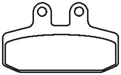 FA25678.5 × 47.5 × 7.5 mm |
| Moto Guzzi V9 Bobber (2016–Present) | EBC FA244 · SBS 706HS | SBS 588HF | FA24475 × 55 × 8.5 mm |
| Royal Enfield Classic 350 (2021–Present) | Brembo 07BB04 | Brembo 07BB02 | — |
| Royal Enfield Continental GT 650 (2019–Present) | Brembo 07BB03 | Brembo 07BB02 | — |
| Royal Enfield Himalayan 411 (2015-2023) | Brembo 07BB04 | Brembo 07BB02 | — |
| Royal Enfield Interceptor 650 (2018–Present) | EBC FA209/2 · SBS 176/674/1005 · Brembo 07BB03 · Vesrah VD-958 | EBC FA213 · Brembo 07BB02 | FA209/2109 × 40.5 × 7.5 mmFA21378 × 41.5 × 9 mm |
| Royal Enfield Meteor 350 (2021–Present) | Brembo 07BB04 | Brembo 07BB02 | — |
| Royal Enfield Super Meteor 650 (2023–Present) | Brembo 07BB03 | Brembo 07BB04 | — |
| Suzuki Burgman 400 (2017–Present) | Brembo 07076 | EBC SFA412 · Brembo 07058 | 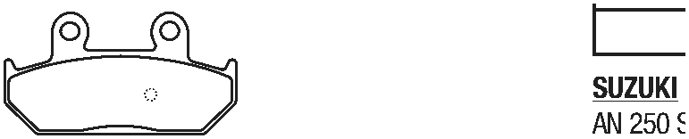 SFA41288 × 46.5 × 8.5 mm |
| Suzuki DR-Z400SM (2000–Present) | Brembo 07KA17 | Brembo 07HO26 | — |
| Suzuki GSX-8S (2023–Present) | Brembo 07KA23 | Brembo 07HO36 | — |
| Suzuki GSX-R1000 (2001-2002) | EBC FA188 · SBS 686 · Brembo 07SU19 · Vesrah VD-349 | EBC FA254 · SBS 715/765/984 · Brembo 07SU25 · Vesrah VD-436 |  FA18889.5 × 53 × 9 mmFA25460 × 57 × 8 mm FA18889.5 × 53 × 9 mmFA25460 × 57 × 8 mm |
| Suzuki GSX-R1000 (2003-2004) | EBC FA379HH · SBS 806 · Brembo 07SU26 · Vesrah VD-355 | EBC FA254 · SBS 715/765/984 · Brembo 07SU25 · Vesrah VD-436 | FA37971.5 × 50.5 × 8 mmFA25460 × 57 × 8 mm |
| Suzuki GSX-R1000 (2005-2006) | EBC FA379HH · SBS 806 · Brembo 07SU27 · Vesrah VD-355 | EBC FA254 · SBS 715/765/984 · Brembo 07SU25 · Vesrah VD-436 | FA37971.5 × 50.5 × 8 mmFA25460 × 57 × 8 mm |
| Suzuki GSX-R1000 (2007-2008) | EBC FA379HH · SBS 806 · Brembo 07SU27 · Vesrah VD-355 | EBC FA419 · SBS 833 · Brembo 07SU32 · Vesrah VD-359 | FA37971.5 × 50.5 × 8 mm FA41989 × 40.5 × 9.5 mm FA41989 × 40.5 × 9.5 mm |
| Suzuki GSX-R1000 (2009-2011) | EBC FA379HH · SBS 806 · Brembo 07SU27 · Vesrah VD-355 | EBC FA436 · SBS 834/991 · Brembo 07HO59 · Vesrah VD-174 | FA37971.5 × 50.5 × 8 mmFA43677.5 × 42 × 9 mm |
| Suzuki GSX-R1000 (2012-2016) | EBC FA447HH · SBS 841/901 · Brembo 07BB37 · Vesrah VD-9031 | EBC FA436 · SBS 834/991 · Brembo 07HO59 · Vesrah VD-174 | FA447102 × 42 × 7.5 mmFA43677.5 × 42 × 9 mm |
| Suzuki GSX-R1000 (2017-Present) | EBC FA447HH · SBS 841/901 · Brembo 07BB37 · Vesrah VD-9031 | EBC FA436 · SBS 834/991 · Brembo 07HO59 · Vesrah VD-174 | FA447102 × 42 × 7.5 mmFA43677.5 × 42 × 9 mm |
| Suzuki GSX-R125 (2017–Present) | EBC FA715 · SBS 951 · Brembo 07SU33 · Vesrah VD-360 | EBC FA629 · SBS 915 · Brembo 07HO61 · Vesrah VD-182 | FA62988 × 40 × 10 mm |
| Suzuki GSX-R600 (2011–Present) | Brembo 07BB37 | Brembo 07HO59 | — |
| Suzuki GSX-R750 (2011–Present) | Brembo 07BB37 | Brembo 07HO59 | — |
| Suzuki GSX-S1000 (2021–Present) | EBC FA447HH · SBS 841/901 · Vesrah VD-9031 | EBC FA174 · SBS 657 · Vesrah VD-163 | FA447102 × 42 × 7.5 mmFA17486 × 40 × 10 mm |
| Suzuki GSX-S1000GT (2022–Present) | Brembo 07BB37 | Brembo 07HO36 | — |
| Suzuki GSX-S750 (2017–Present) | EBC FA347HH · SBS 782 · Vesrah VD-443 | EBC FA174 · SBS 657 · Vesrah VD-163 | FA34769.5 × 49.5 × 7 mmFA17486 × 40 × 10 mm |
| Suzuki GSX1300R (1999-2007) | Brembo 07SU19 | Brembo 07KS05 | — |
| Suzuki GSX1300R (2008-2020) | Brembo 07BB37 | Brembo 07SU32 | — |
| Suzuki GSX1300R (2021-Present) | Brembo 07BB37 | Brembo 07SU32 | — |
| Suzuki GSX250R (2017–Present) | EBC FA226 · Brembo 07HO30 | EBC FA496 · SBS 881 · Brembo 07HO53 · Vesrah VD-147/2 | FA226102 × 39 × 9 mmFA49686 × 40 × 9 mm |
| Suzuki Katana (2019–Present) | EBC FA447HH · SBS 841/901 · Brembo 07BB37 · Vesrah VD-9031 | EBC FA436 · SBS 834/991 · Brembo 07HO36 · Vesrah VD-174 | FA447102 × 42 × 7.5 mmFA43677.5 × 42 × 9 mm |
| Suzuki SV650 (2016–Present) | SBS 705HS | EBC FA496 · SBS 881 · Vesrah VD-147/2 | FA49686 × 40 × 9 mm |
| Suzuki V-Strom 1050 (2020–Present) | EBC FA379HH · SBS 806 · Brembo 07SU27 · Vesrah VD-355 | EBC FA419 · SBS 833 · Brembo 07SU32 · Vesrah VD-359 | FA37971.5 × 50.5 × 8 mmFA41989 × 40.5 × 9.5 mm |
| Suzuki V-Strom 1050DE (2023–Present) | Brembo 07SU27 | Brembo 07SU32 | — |
| Suzuki V-Strom 650 (2017–Present) | Brembo 07KA19 | EBC FA174 · SBS 657 · Brembo 07HO36 · Vesrah VD-163 | FA17486 × 40 × 10 mm |
| Triumph Bonneville Bobber (2017–Present) | EBC FA142 · SBS 183/242/627 · Vesrah VD-156 | EBC FA140 · SBS 240/614/657 · Vesrah VD-147 | FA142102 × 39 × 9 mmFA14086.5 × 39.5 × 10.5 mm |
| Triumph Bonneville Speedmaster (2018–Present) | EBC FA181X · SBS 671/1003 · Brembo 07BB04 · Vesrah VD-947 | EBC FA140 · SBS 240/614/657 · Brembo 07HO27 · Vesrah VD-147 | FA14086.5 × 39.5 × 10.5 mm |
| Triumph Bonneville T100 (2016-Present) | EBC FA142 · SBS 183/242/627 · Vesrah VD-156 | EBC FA214/2 · Vesrah VD-340/2 | FA142102 × 39 × 9 mm FA214/296.5 × 43.5 × 9.5 mm FA214/296.5 × 43.5 × 9.5 mm |
| Triumph Bonneville T120 (2016–Present) | EBC FA142 · SBS 183/242/627 · Vesrah VD-156 | EBC FA214 | FA142102 × 39 × 9 mm 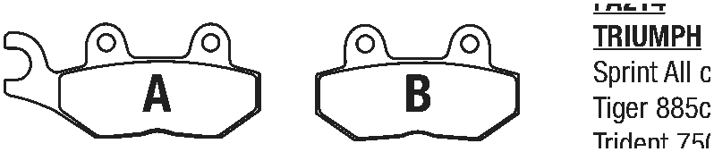 FA21496.5 × 43.5 × 7.5 mm |
| Triumph Rocket 3 GT (2020–Present) | EBC FA447HH · SBS 841/901 · Brembo 07BB37 · Vesrah VD-9031 | EBC FA630HH · SBS 900 · Brembo 07BB38 · Vesrah VD-9070 | FA447102 × 42 × 7.5 mmFA63085 × 50.5 × 8 mm |
| Triumph Rocket 3 R (2020–Present) | EBC FA447HH · SBS 841/901 · Brembo 07BB37 · Vesrah VD-9031 | EBC FA630HH · SBS 900 · Brembo 07BB38 · Vesrah VD-9070 | FA447102 × 42 × 7.5 mmFA63085 × 50.5 × 8 mm |
| Triumph Scrambler 1200 XE (2019–Present) | EBC FA447HH · SBS 841/901 · Brembo 07BB37 · Vesrah VD-9031 | EBC FA209/2 · SBS 176/674/1005 · Brembo 07BB03 · Vesrah VD-958 | FA447102 × 42 × 7.5 mmFA209/2109 × 40.5 × 7.5 mm |
| Triumph Scrambler 900 (2017–Present) | SBS 762HS | SBS 611LS | — |
| Triumph Speed Triple 1200 RR (2022–Present) | SBS 901HS | SBS 730LS | — |
| Triumph Speed Triple 1200 RS (2021–Present) | EBC FA447HH · SBS 841/901 · Brembo 07BB37 · Vesrah VD-9031 | EBC FA213HH · Brembo 07BB20 | FA447102 × 42 × 7.5 mmFA21378 × 41.5 × 9 mm |
| Triumph Speed Twin 1200 (2019–Present) | EBC FA447 · SBS 762HS | SBS 611LS | FA447102 × 42 × 7.5 mm |
| Triumph Street Triple 765 (2023–Present) | SBS 900HS | SBS 675LS | — |
| Triumph Tiger 1200 (2022–Present) | EBC FA630HH · SBS 900 · Vesrah VD-9070 | EBC FA214/2 · Vesrah VD-340/2 | FA63085 × 50.5 × 8 mmFA214/296.5 × 43.5 × 9.5 mm |
| Triumph Tiger 900 (2020–Present) | EBC FA447HH · SBS 841/901 · Brembo 07BB37 · Vesrah VD-9031 | EBC FA213 · Brembo 07BB02 | FA447102 × 42 × 7.5 mmFA21378 × 41.5 × 9 mm |
| Triumph Tiger Sport 660 (2022–Present) | Brembo 07HO30 | Brembo 07HO27 | — |
| Triumph Trident 660 (2021–Present) | EBC FA226 · Brembo 07HO30 | EBC FA140 · SBS 240/614/657 · Brembo 07HO27 · Vesrah VD-147 | FA226102 × 39 × 9 mmFA14086.5 × 39.5 × 10.5 mm |
| Vespa Primavera 150 (2014–Present) | EBC SFA353 | EBC 816 | 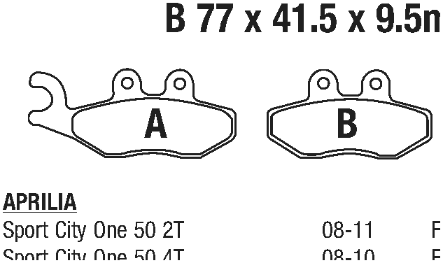 SFA35397 × 41.5 × 9.5 mm |
| Yamaha 1100 SE, Maxim (1981) | EBC FA70 · SBS 547HF | — |  FA7065.5 × 59 × 10 mm FA7065.5 × 59 × 10 mm |
| Yamaha 750 Maxim (1981) | EBC FA70 · SBS 547HF | EBC FA88 · SBS 555HF | FA7065.5 × 59 × 10 mm FA8863.5 × 55 × 9 mm FA8863.5 × 55 × 9 mm |
| Yamaha 800 Fazer 8 (2010–2015) | EBC FA252 · SBS 634HS | EBC FA174 · SBS 657LS |  FA25269 × 51.5 × 8.5 mmFA17486 × 40 × 10 mm FA25269 × 51.5 × 8.5 mmFA17486 × 40 × 10 mm |
| Yamaha BT 1100 Bulldog (2002–2006) | EBC FA252 · SBS 634HS | EBC FA88 · SBS 555LS | FA25269 × 51.5 × 8.5 mmFA8863.5 × 55 × 9 mm |
| Yamaha DT 175 (1995–2000) | SBS 2034 | EBC FA275 · SBS 728HF |  FA275100 × 31 × 9 mm FA275100 × 31 × 9 mm |
| Yamaha FJ-09 850 (2015–2017) | EBC FA252 · SBS 634HS | EBC FA174 · SBS 657LS | FA25269 × 51.5 × 8.5 mmFA17486 × 40 × 10 mm |
| Yamaha FJ 1100 (1983–1985) | EBC FA88 · SBS 555HF | — | FA8863.5 × 55 × 9 mm |
| Yamaha FJ 1200 (1986–1990) | EBC FA88 · SBS 555HF | EBC FA123 · SBS 613HF | FA8863.5 × 55 × 9 mm 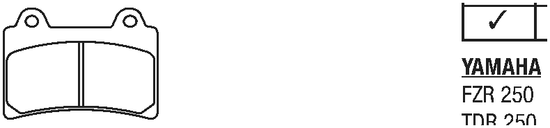 FA12375 × 54 × 10 mm |
| Yamaha FJ 1200 ABS (1991–1993) | EBC FA123 · SBS 613HS | EBC FA88 · SBS 555LS | FA12375 × 54 × 10 mmFA8863.5 × 55 × 9 mm |
| Yamaha FJ 600 (1984–1985) | EBC FA88 · SBS 555HF | — | FA8863.5 × 55 × 9 mm |
| Yamaha FJR 1300 (2001–2003) | EBC FA252 · SBS 634HS | EBC FA319/2 · SBS 769LS | FA25269 × 51.5 × 8.5 mm FA319/2100 × 38.5 × 9.5 mm FA319/2100 × 38.5 × 9.5 mm |
| Yamaha FJR 1300 A (2013–2020) | SBS 740HS | EBC FA319/2 · SBS 769LS | FA319/2100 × 38.5 × 9.5 mm |
| Yamaha FJR 1300 ABS (2003–2012) | EBC FA252 · SBS 634HS | EBC FA319/2 · SBS 769LS | FA25269 × 51.5 × 8.5 mmFA319/2100 × 38.5 × 9.5 mm |
| Yamaha FJR 1300 AE (2016–2019) | SBS 740HS | EBC FA319/2 · SBS 769LS | FA319/2100 × 38.5 × 9.5 mm |
| Yamaha FJR 1300 AS (2013–2019) | SBS 740HS | EBC FA319/2 · SBS 769LS | FA319/2100 × 38.5 × 9.5 mm |
| Yamaha FZ-07 700 (2014–2017) | EBC FA252 · SBS 634HS | EBC FA174 · SBS 657LS | FA25269 × 51.5 × 8.5 mmFA17486 × 40 × 10 mm |
| Yamaha FZ-09 850 (2014–2017) | EBC FA252 · SBS 634HS | EBC FA174 · SBS 657LS | FA25269 × 51.5 × 8.5 mmFA17486 × 40 × 10 mm |
| Yamaha FZ-10 1000 (2016–2017) | EBC FA252 · SBS 634HS | EBC FA174 · SBS 657LS | FA25269 × 51.5 × 8.5 mmFA17486 × 40 × 10 mm |
| Yamaha FZ 250 Phazer N, S (1985–1986) | EBC FA88 · SBS 555HF | SBS 2034 | FA8863.5 × 55 × 9 mm |
| Yamaha FZ 250 R (1985) | EBC FA104 · SBS 570HF | — | 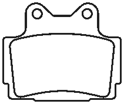 FA10468 × 56 × 9 mm |
| Yamaha FZ 600 (1986–1987) | EBC FA88 · SBS 555HF | — | FA8863.5 × 55 × 9 mm |
| Yamaha FZ 600 S, SC (1986–1989) | EBC FA88 · SBS 555HF | EBC FA104 · SBS 570HF | FA8863.5 × 55 × 9 mmFA10468 × 56 × 9 mm |
| Yamaha FZ 700 (1987–1988) | EBC FA88 · SBS 555HF | — | FA8863.5 × 55 × 9 mm |
| Yamaha FZ 750 (1985–1986) | EBC FA88 · SBS 555HF | — | FA8863.5 × 55 × 9 mm |
| Yamaha FZ 750 Genesis (1986–1992) | EBC FA88 · SBS 555HF | EBC FA104 · SBS 570HF | FA8863.5 × 55 × 9 mmFA10468 × 56 × 9 mm |
| Yamaha FZ1 1000 Fazer (2006–2016) | EBC FA252 · SBS 634HS | EBC FA174 · SBS 657LS | FA25269 × 51.5 × 8.5 mmFA17486 × 40 × 10 mm |
| Yamaha FZ25 250 (2019) | EBC FA181 · SBS 671HF | EBC FA152 · SBS 632HF | FA18194 × 36.5 × 7.5 mm FA15262 × 41 × 8.5 mm FA15262 × 41 × 8.5 mm |
| Yamaha FZ6 600 (2004–2008) | EBC FA199 · SBS 691HS | EBC FA174 · SBS 657LS |  FA19994 × 40.5 × 10 mmFA17486 × 40 × 10 mm FA19994 × 40.5 × 10 mmFA17486 × 40 × 10 mm |
| Yamaha FZ6 600 Fazer (2004–2008) | EBC FA199 · SBS 691HS | EBC FA174 · SBS 657LS | FA19994 × 40.5 × 10 mmFA17486 × 40 × 10 mm |
| Yamaha FZ6 600 Fazer S2 (2007–2009) | EBC FA252 · SBS 634HS | EBC FA174 · SBS 657LS | FA25269 × 51.5 × 8.5 mmFA17486 × 40 × 10 mm |
| Yamaha FZ6 600 Fazer S2 ABS (2007–2009) | EBC FA252 · SBS 634HS | EBC FA174 · SBS 657LS | FA25269 × 51.5 × 8.5 mmFA17486 × 40 × 10 mm |
| Yamaha FZ6 600 S2 (2007–2009) | EBC FA252 · SBS 634HS | EBC FA174 · SBS 657LS | FA25269 × 51.5 × 8.5 mmFA17486 × 40 × 10 mm |
| Yamaha FZ6 600 S2 ABS (2007–2009) | EBC FA252 · SBS 634HS | EBC FA174 · SBS 657LS | FA25269 × 51.5 × 8.5 mmFA17486 × 40 × 10 mm |
| Yamaha FZ6R 600 (2009–2014) | EBC FA199 · SBS 691HS | EBC FA140 · SBS 614LS | FA19994 × 40.5 × 10 mmFA14086.5 × 39.5 × 10.5 mm |
| Yamaha FZ8 800 (2010–2014) | EBC FA252 · SBS 634HS | EBC FA174 · SBS 657LS | FA25269 × 51.5 × 8.5 mmFA17486 × 40 × 10 mm |
| Yamaha FZR 1000 (1994–1995) | EBC FA190 · SBS 683HS | EBC FA88 · SBS 555LS | 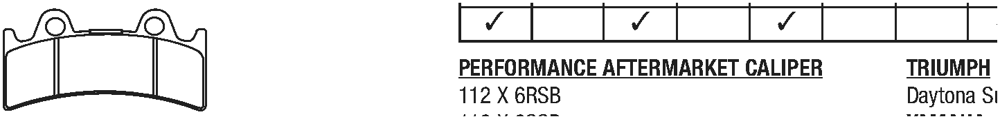 FA19099 × 49.5 × 10 mmFA8863.5 × 55 × 9 mm |
| Yamaha FZR 1000 EX UP (1990–1993) | EBC FA123 · SBS 645HS | EBC FA88 · SBS 555LS | FA12375 × 54 × 10 mmFA8863.5 × 55 × 9 mm |
| Yamaha FZR 1000 Genesis (1987–1989) | EBC FA123 · SBS 613HF | EBC FA88 · SBS 555HF | FA12375 × 54 × 10 mmFA8863.5 × 55 × 9 mm |
| Yamaha FZR 400 A (1990) | EBC FA123 · SBS 613HS | EBC FA104 · SBS 570LS | FA12375 × 54 × 10 mmFA10468 × 56 × 9 mm |
| Yamaha FZR 600 (1989) | EBC FA88 · SBS 555HF | — | FA8863.5 × 55 × 9 mm |
| Yamaha FZR 600 R (1990–1995) | EBC FA123 · SBS 645HS | EBC FA88 · SBS 555LS | FA12375 × 54 × 10 mmFA8863.5 × 55 × 9 mm |
| Yamaha FZR 750 R (1989–1992) | EBC FA145 · SBS 624HS | EBC FA88 · SBS 555LS |  FA14570 × 55 × 8 mmFA8863.5 × 55 × 9 mm FA14570 × 55 × 8 mmFA8863.5 × 55 × 9 mm |
| Yamaha FZR 750 R Genesis (1987–1988) | EBC FA123 · SBS 613HF | EBC FA88 · SBS 555HF | FA12375 × 54 × 10 mmFA8863.5 × 55 × 9 mm |
| Yamaha FZS 1000 Fazer (2001–2005) | EBC FA252 · SBS 634HS | EBC FA348 · SBS 770LS | FA25269 × 51.5 × 8.5 mm FA34864 × 60.5 × 9 mm FA34864 × 60.5 × 9 mm |
| Yamaha FZS 600 Fazer (1998–2003) | EBC FA252 · SBS 634HS | EBC FA104 · SBS 570LS | FA25269 × 51.5 × 8.5 mmFA10468 × 56 × 9 mm |
| Yamaha FZS 600 S Fazer (2001–2003) | EBC FA252 · SBS 634HS | EBC FA104 · SBS 570LS | FA25269 × 51.5 × 8.5 mmFA10468 × 56 × 9 mm |
| Yamaha FZX 700 Fazer (1987–1988) | EBC FA88 · SBS 555HF | — | FA8863.5 × 55 × 9 mm |
| Yamaha FZX 750 Fazer (1986–1990) | EBC FA88 · SBS 555HF | — | FA8863.5 × 55 × 9 mm |
| Yamaha GTS 1000 (1993–1999) | EBC FA191 · SBS 682HF | EBC FA88 · SBS 555HF | 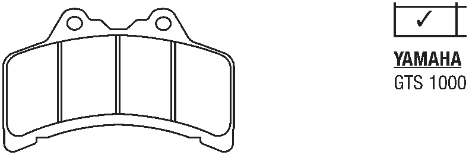 FA191131.5 × 81 × 9.5 mmFA8863.5 × 55 × 9 mm |
| Yamaha IT 200 (1984–1986) | SBS 2049 | EBC FA101 · SBS 575SI | 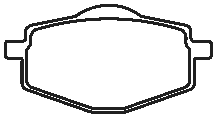 FA10170.5 × 36 × 9 mm |
| Yamaha MT-03 (2006–2014) | Brembo 07YA34 | Brembo 07BB02 | — |
| Yamaha MT-03 (2016–Present) | EBC FA663 · SBS 931 · Brembo 07YA52 · Vesrah VD-289 | EBC FA662 · SBS 932 · Brembo 07YA53 · Vesrah VD-290 | FA663113.5 × 55 × 8.5 mm 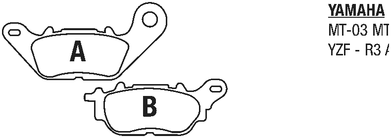 FA662109.5 × 50.5 × 11 mm |
| Yamaha MT-07 (2018–Present) | EBC FA252 · SBS 634HS · Brembo 07YA23 · Vesrah VD-274 | EBC FA174 · SBS 657LS · Brembo 07HO36 · Vesrah VD-163 | FA25269 × 51.5 × 8.5 mmFA17486 × 40 × 10 mm |
| Yamaha MT-07 700 Moto Cage (2015–2017) | EBC FA252 · SBS 634HS | EBC FA174 · SBS 657LS | FA25269 × 51.5 × 8.5 mmFA17486 × 40 × 10 mm |
| Yamaha MT-07 700 SP (2018) | EBC FA252 · SBS 634HS | EBC FA174 · SBS 657LS | FA25269 × 51.5 × 8.5 mmFA17486 × 40 × 10 mm |
| Yamaha MT-07 700 Tracer (2016–2020) | EBC FA252 · SBS 634HS | EBC FA174 · SBS 657LS | FA25269 × 51.5 × 8.5 mmFA17486 × 40 × 10 mm |
| Yamaha MT-07 700 Tracer GT (2019) | EBC FA252 · SBS 634HS | EBC FA174 · SBS 657LS | FA25269 × 51.5 × 8.5 mmFA17486 × 40 × 10 mm |
| Yamaha MT-09 (2015-2018) | EBC FA252 · SBS 198/634/639 · Brembo 07YA23 · Vesrah VD-274 | EBC FA174 · SBS 657 · Brembo 07HO36 · Vesrah VD-163 | FA25269 × 51.5 × 8.5 mmFA17486 × 40 × 10 mm |
| Yamaha MT-09 900 SP (2018–2020) | EBC FA252 · SBS 634HS | EBC FA174 · SBS 657LS | FA25269 × 51.5 × 8.5 mmFA17486 × 40 × 10 mm |
| Yamaha MT-09 900 Sport Tracker (2015–2016) | EBC FA252 · SBS 634HS | EBC FA174 · SBS 657LS | FA25269 × 51.5 × 8.5 mmFA17486 × 40 × 10 mm |
| Yamaha MT-09 900 Street Rally (2014–2016) | EBC FA252 · SBS 634HS | EBC FA174 · SBS 657LS | FA25269 × 51.5 × 8.5 mmFA17486 × 40 × 10 mm |
| Yamaha MT-09 900 Tracer (2015–2020) | EBC FA252 · SBS 634HS | EBC FA174 · SBS 657LS | FA25269 × 51.5 × 8.5 mmFA17486 × 40 × 10 mm |
| Yamaha MT-09 900 Tracer GT (2018–2022) | EBC FA252 · SBS 634HS | EBC FA174 · SBS 657LS | FA25269 × 51.5 × 8.5 mmFA17486 × 40 × 10 mm |
| Yamaha MT-10 1000 SP (2017–2019) | EBC FA252 · SBS 634HS | EBC FA174 · SBS 657LS | FA25269 × 51.5 × 8.5 mmFA17486 × 40 × 10 mm |
| Yamaha MT-10 (2016–Present) | Brembo 07YA23 | Brembo 07HO36 | — |
| Yamaha MT-125 (2014–Present) | — | EBC FA377 | FA37794 × 47 × 8.5 mm |
| Yamaha MXT 850 Niken (2018–2022) | EBC FA252 · SBS 634HS | SBS 991LS | FA25269 × 51.5 × 8.5 mm |
| Yamaha MXT 850 Niken GT (2019–2022) | EBC FA252 · SBS 634HS | SBS 991LS | FA25269 × 51.5 × 8.5 mm |
| Yamaha YZF-R1 (2020-2024) | Brembo 07YA23 | Brembo 07HO59 | — |
| Yamaha YZF-R3 (2015-2018) | EBC FA663 · SBS 931 · Brembo 07YA52 · Vesrah VD-289 | EBC FA662 · SBS 932 · Brembo 07YA53 · Vesrah VD-290 | FA663113.5 × 55 × 8.5 mmFA662109.5 × 50.5 × 11 mm |
| Yamaha YZF-R3 (2019-Present) | EBC FA663 · SBS 931 · Brembo 07YA52 · Vesrah VD-289 | EBC FA662 · SBS 932 · Brembo 07YA53 · Vesrah VD-290 | FA663113.5 × 55 × 8.5 mmFA662109.5 × 50.5 × 11 mm |
| Yamaha RD 250 (1973–1979) | EBC FA11 · SBS 504HF | SBS 2064 |  FA1148 × 9 mm FA1148 × 9 mm |
| Yamaha RD 350 (1973–1979) | EBC FA11 · SBS 504HF | SBS 2064 | FA1148 × 9 mm |
| Yamaha RD 50 MX (1981–1987) | EBC FA70 · SBS 547HF | SBS 2032 | FA7065.5 × 59 × 10 mm |
| Yamaha RT 180 (1990–1996) | EBC FA118 · SBS 596HF | SBS 2034 |  FA11871 × 39.5 × 10 mm FA11871 × 39.5 × 10 mm |
| Yamaha RZ 350 (1984–1988) | EBC FA81 · SBS 550HF | EBC FA88 · SBS 555HF | 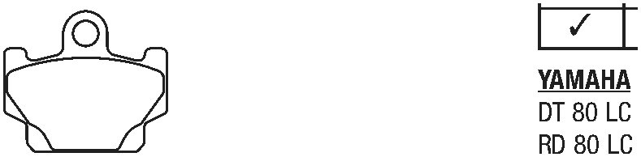 FA8168 × 58.5 × 10.5 mmFA8863.5 × 55 × 9 mm |
| Yamaha SCR 950 Scrambler (2017–2019) | EBC FA179 · SBS 663HS | EBC FA319/2 · SBS 769LS | 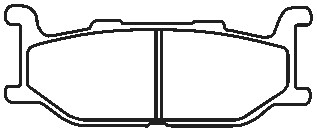 FA179102 × 41 × 10 mmFA319/2100 × 38.5 × 9.5 mm |
| Yamaha SR 500 (1978–1998) | EBC FA34 · SBS 507HF | SBS 2037 |  FA3466 × 49.5 × 11 mm FA3466 × 49.5 × 11 mm |
| Yamaha SRX 250 T,TC (1987) | EBC FA104 · SBS 570HF | SBS 2037 | FA10468 × 56 × 9 mm |
| Yamaha SRX 600 (1986–1999) | EBC FA104 · SBS 570HF | EBC FA123 · SBS 590HF | FA10468 × 56 × 9 mmFA12375 × 54 × 10 mm |
| Yamaha Super Ténéré 1200 (2010–2020) | Brembo 07YA23 | Brembo 07YA39 | — |
| Yamaha TDM 850 (1991–2001) | EBC FA123 · SBS 590HS | EBC FA88 · SBS 555LS | FA12375 × 54 × 10 mmFA8863.5 × 55 × 9 mm |
| Yamaha Ténéré 700 (2019–Present) | EBC FA181X · SBS 671HS · Brembo 07BB04 · Vesrah VD-947 | EBC FA208X · SBS 675LS · Brembo 07BB02 · Vesrah VD-953 | — |
| Yamaha TMAX 560 (2020–Present) | SBS 198MS | SBS 169MS | — |
| Yamaha Tracer 9 GT (2021–Present) | Brembo 07YA23 | Brembo 07HO36 | — |
| Yamaha TT 200 (1986–1989) | EBC FA101 · SBS 575HF | SBS 2028 | FA10170.5 × 36 × 9 mm |
| Yamaha TT 225 S,T (1986–2000) | EBC FA101 · SBS 575HF | SBS 2028 | FA10170.5 × 36 × 9 mm |
| Yamaha TT 250 (1987–2003) | EBC FA105 · SBS 580HF | SBS 2034 | 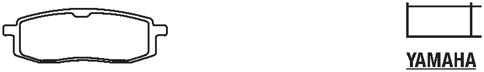 FA10591 × 30 × 8 mm |
| Yamaha TT 350 (1986–2000) | EBC FA105 · SBS 580SI | SBS 2034 | FA10591 × 30 × 8 mm |
| Yamaha TT 600 (1985–1992) | EBC FA101 · SBS 575HF | SBS 2034 | FA10170.5 × 36 × 9 mm |
| Yamaha TT-R 125 LW (2000–2020) | EBC FA119 · SBS 589SI | SBS 2028 | FA11982.5 × 21.5 × 7 mm |
| Yamaha TT-R 225 (2001–2004) | EBC FA101 · SBS 575SI | SBS 2028 | FA10170.5 × 36 × 9 mm |
| Yamaha TT-R 230 (2005–2022) | EBC FA135 · SBS 611SI | SBS 2034 | FA13597 × 42 × 7.5 mm |
| Yamaha TW 125 (1999–2007) | EBC FA275 · SBS 728HF | SBS 2028 | FA275100 × 31 × 9 mm |
| Yamaha TX 500 A, B (1974–1977) | EBC FA11 · SBS 504HF | SBS 2063 | FA1148 × 9 mm |
| Yamaha TX 650 (1972–1973) | EBC FA11 · SBS 504HF | — | FA1148 × 9 mm |
| Yamaha TX 750 (1973–1974) | EBC FA11 · SBS 504HF | SBS 2065 | FA1148 × 9 mm |
| Yamaha TX 750 A (1973–1976) | EBC FA11 · SBS 504HF | EBC FA88 · SBS 555HF | FA1148 × 9 mmFA8863.5 × 55 × 9 mm |
| Yamaha TZ 125 (1997–2000) | EBC FA145 · SBS 624DC | EBC FA162 · SBS 659RQ | FA14570 × 55 × 8 mmFA16248 × 44.5 × 7.5 mm |
| Yamaha TZ 250 (1982–2005) | EBC FA145 · SBS 624DC | EBC FA162 · SBS 659RQ | FA14570 × 55 × 8 mmFA16248 × 44.5 × 7.5 mm |
| Yamaha V-MAX 1200 (1985–2003) | EBC FA88 · SBS 555HF | EBC FA88 · SBS 555HS | FA8863.5 × 55 × 9 mmFA8863.5 × 55 × 9 mm |
| Yamaha VF 750 Virago (1988) | EBC FA88 · SBS 555HF | SBS 2065 | FA8863.5 × 55 × 9 mm |
| Yamaha VMX 1700 V-Max (2009–2018) | EBC FA442/4 · SBS 839HS | EBC FA319/2 · SBS 769LS |  FA442/462 × 44.5 × 8 mmFA319/2100 × 38.5 × 9.5 mm FA442/462 × 44.5 × 8 mmFA319/2100 × 38.5 × 9.5 mm |
| Yamaha WR 125 (1991–2002) | EBC FA135 · SBS 611SI | EBC FA152 · SBS 632SI | FA13597 × 42 × 7.5 mmFA15262 × 41 × 8.5 mm |
| Yamaha WR 125 R, XY (2009–2016) | EBC FA142 · SBS 627HF | SBS 675HF | FA142102 × 39 × 9 mm |
| Yamaha WR 200 (1991–1992) | EBC FA135 · SBS 611SI | EBC FA152 · SBS 632SI | FA13597 × 42 × 7.5 mmFA15262 × 41 × 8.5 mm |
| Yamaha WR 250 (1990–2002) | EBC FA135 · SBS 611SI | EBC FA152 · SBS 632SI | FA13597 × 42 × 7.5 mmFA15262 × 41 × 8.5 mm |
| Yamaha WR 250 F (2001–2013) | EBC FA185 · SBS 694SI | EBC FA131 · SBS 604SI | FA18594 × 33.5 × 7 mmFA13175 × 36 × 10.5 mm |
| Yamaha WR 250 F Efi (2015–2021) | EBC FA185 · SBS 694SI | EBC FA367 · SBS 790SI | FA18594 × 33.5 × 7 mmFA36767 × 36 × 11 mm |
| Yamaha WR 250 F Enduro GP (2018) | EBC FA450 · SBS 840SI | EBC FA367 · SBS 790SI | FA45094 × 31.5 × 7 mmFA36767 × 36 × 11 mm |
| Yamaha WR 250 R (2008–2020) | EBC FA185 · SBS 694HS | EBC FA367 · SBS 790LS | FA18594 × 33.5 × 7 mmFA36767 × 36 × 11 mm |
| Yamaha WR 250 X (2008–2016) | EBC FA142 · SBS 627HS | EBC FA367 · SBS 790LS | FA142102 × 39 × 9 mmFA36767 × 36 × 11 mm |
| Yamaha WR 400 F (1998–2000) | EBC FA185 · SBS 694SI | EBC FA152 · SBS 648SI | FA18594 × 33.5 × 7 mmFA15262 × 41 × 8.5 mm |
| Yamaha WR 426 F (2001–2002) | EBC FA185 · SBS 694SI | EBC FA131 · SBS 604SI | FA18594 × 33.5 × 7 mmFA13175 × 36 × 10.5 mm |
| Yamaha WR 450 F Efi (2016–2021) | EBC FA450 · SBS 840SI | EBC FA367 · SBS 790SI | FA45094 × 31.5 × 7 mmFA36767 × 36 × 11 mm |
| Yamaha WR 450 F Enduro GP (2018) | EBC FA450 · SBS 840SI | EBC FA367 · SBS 790SI | FA45094 × 31.5 × 7 mmFA36767 × 36 × 11 mm |
| Yamaha WR 500 B (1991) | EBC FA135 · SBS 611SI | EBC FA101 · SBS 575SI | FA13597 × 42 × 7.5 mmFA10170.5 × 36 × 9 mm |
| Yamaha WR 500 ZD,ZE (1992–1993) | EBC FA135 · SBS 611SI | EBC FA152 · SBS 632SI | FA13597 × 42 × 7.5 mmFA15262 × 41 × 8.5 mm |
| Yamaha WR450F (2024–Present) | EBC FA185 · SBS 694SI | EBC FA367 · SBS 790SI | FA18594 × 33.5 × 7 mmFA36767 × 36 × 11 mm |
| Yamaha XG 250 Tricker (2005–2011) | EBC FA275 · SBS 728HF | EBC FA152 · SBS 632HF | FA275100 × 31 × 9 mmFA15262 × 41 × 8.5 mm |
| Yamaha XJ 1100 (1981) | EBC FA70 · SBS 547HF | EBC FA41 · SBS 528HF | FA7065.5 × 59 × 10 mm FA4194.5 × 56 × 20 mm FA4194.5 × 56 × 20 mm |
| Yamaha XJ 400 S Seca II (1993) | EBC FA179 · SBS 663HS | EBC FA104 · SBS 570LS | FA179102 × 41 × 10 mmFA10468 × 56 × 9 mm |
| Yamaha XJ 550 Maxim (1981–1983) | EBC FA70 · SBS 547HF | SBS 2063 | FA7065.5 × 59 × 10 mm |
| Yamaha XJ 550 Seca (1981–1983) | EBC FA70 · SBS 547HF | SBS 2066 | FA7065.5 × 59 × 10 mm |
| Yamaha XJ 600 SECA II (1992–1996) | EBC FA179 · SBS 663HS | EBC FA104 · SBS 570LS | FA179102 × 41 × 10 mmFA10468 × 56 × 9 mm |
| Yamaha XJ 650 (1980–1983) | EBC FA34 · SBS 507HF | SBS 2065 | FA3466 × 49.5 × 11 mm |
| Yamaha XJ 650 G, H, SH (1980–1983) | EBC FA61 · SBS 545HF | SBS 2065 |  FA6194.5 × 56 × 20 mm FA6194.5 × 56 × 20 mm |
| Yamaha XJ 650 RJ Seca (1981–1983) | EBC FA34 · SBS 507HF | SBS 2065 | FA3466 × 49.5 × 11 mm |
| Yamaha XJ 650 Turbo (1981–1982) | EBC FA81 · SBS 550HF | SBS 2065 | FA8168 × 58.5 × 10.5 mm |
| Yamaha XJ 700 (1986–1989) | EBC FA88 · SBS 555HF | SBS 2065 | FA8863.5 × 55 × 9 mm |
| Yamaha XJ 700 Maxim (1985–1989) | EBC FA88 · SBS 555HF | — | FA8863.5 × 55 × 9 mm |
| Yamaha XJ 750 (1983–1987) | EBC FA88 · SBS 555HF | — | FA8863.5 × 55 × 9 mm |
| Yamaha XJ 750 E (1981–1983) | EBC FA34 · SBS 507HF | SBS 2065 | FA3466 × 49.5 × 11 mm |
| Yamaha XJ 750 Maxim (1982) | EBC FA81 · SBS 550HF | SBS 2065 | FA8168 × 58.5 × 10.5 mm |
| Yamaha XJ 750 Seca (1981–1983) | EBC FA70 · SBS 547HF | SBS 2065 | FA7065.5 × 59 × 10 mm |
| Yamaha XJ 900 (1983–1993) | EBC FA88 · SBS 555HF | — | FA8863.5 × 55 × 9 mm |
| Yamaha XJR 1300 Racer (2015–2019) | EBC FA252 · SBS 634HS | EBC FA348 · SBS 770LS | FA25269 × 51.5 × 8.5 mmFA34864 × 60.5 × 9 mm |
| Yamaha XJR 1300 SP (2001) | EBC FA252 · SBS 634HS | EBC FA88 · SBS 555LS | FA25269 × 51.5 × 8.5 mmFA8863.5 × 55 × 9 mm |
| Yamaha XMAX 300 (2017–Present) | EBC SFA705 · Brembo 07YA52 | EBC SFA706 · Brembo 07YA53 | SFA705113.5 × 55 × 8.5 mmSFA706113.5 × 52 × 9.5 mm |
| Yamaha XS 1100 E,F,G,H (1978–1981) | EBC FA34 · SBS 507HF | — | FA3466 × 49.5 × 11 mm |
| Yamaha XS 1100 LH Midnight (1981) | EBC FA70 · SBS 547HF | EBC FA41 · SBS 528HF | FA7065.5 × 59 × 10 mmFA4194.5 × 56 × 20 mm |
| Yamaha XS 1100 SF, SG, SH, LG (1979–1981) | EBC FA61 · SBS 545HF | EBC FA34 · SBS 507HF | FA6194.5 × 56 × 20 mmFA3466 × 49.5 × 11 mm |
| Yamaha XS 250 C (1977–1981) | EBC FA34 · SBS 507HF | SBS 2113 | FA3466 × 49.5 × 11 mm |
| Yamaha XS 250 D, E (1979–1980) | EBC FA34 · SBS 507HF | SBS 2066 | FA3466 × 49.5 × 11 mm |
| Yamaha XS 250 SE, SF (1980–1981) | EBC FA41 · SBS 528HF | SBS 2066 | FA4194.5 × 56 × 20 mm |
| Yamaha XS 360 B (1976) | EBC FA11 · SBS 504HF | SBS 2064 | FA1148 × 9 mm |
| Yamaha XS 360 C, D (1977) | EBC FA34 · SBS 507HF | — | FA3466 × 49.5 × 11 mm |
| Yamaha XS 400 (1977–1985) | EBC FA34 · SBS 507HF | SBS 2113 | FA3466 × 49.5 × 11 mm |
| Yamaha XS 400 DOHC (1982) | EBC FA81 · SBS 550HF | SBS 2066 | FA8168 × 58.5 × 10.5 mm |
| Yamaha XS 400 SE (1980–1981) | EBC FA61 · SBS 545HF | SBS 2066 | FA6194.5 × 56 × 20 mm |
| Yamaha XS 400 SG, SH, SF (1980–1981) | EBC FA41 · SBS 528HF | SBS 2066 | FA4194.5 × 56 × 20 mm |
| Yamaha XS 400 Z (1983) | EBC FA88 · SBS 555HF | — | FA8863.5 × 55 × 9 mm |
| Yamaha XS 500 (1975–1981) | EBC FA11 · SBS 504HF | SBS 2063 | FA1148 × 9 mm |
| Yamaha XS 650 (1975–1985) | EBC FA11 · SBS 504HF | SBS 2064 | FA1148 × 9 mm |
| Yamaha XS 650 SE (1980–1982) | EBC FA34 · SBS 507HF | — | FA3466 × 49.5 × 11 mm |
| Yamaha XS 650 SJ, SK (1982) | EBC FA34 · SBS 507HF | SBS 2064 | FA3466 × 49.5 × 11 mm |
| Yamaha XS 650 SK, Heritage (1983) | EBC FA34 · SBS 507HF | — | FA3466 × 49.5 × 11 mm |
| Yamaha XS 750 (1977–1980) | EBC FA34 · SBS 507HF | — | FA3466 × 49.5 × 11 mm |
| Yamaha XS 750 H, J, K (1981–1982) | EBC FA61 · SBS 545HF | EBC FA34 · SBS 507HF | FA6194.5 × 56 × 20 mmFA3466 × 49.5 × 11 mm |
| Yamaha XS 750 SE (1979–1980) | EBC FA61 · SBS 545HF | EBC FA34 · SBS 507HF | FA6194.5 × 56 × 20 mmFA3466 × 49.5 × 11 mm |
| Yamaha XS 850 (1980–1981) | EBC FA34 · SBS 507HF | EBC FA61 · SBS 545HF | FA3466 × 49.5 × 11 mmFA6194.5 × 56 × 20 mm |
| Yamaha XSR 700 XTribute (2019–2022) | EBC FA252 · SBS 634HS | EBC FA174 · SBS 657LS | FA25269 × 51.5 × 8.5 mmFA17486 × 40 × 10 mm |
| Yamaha XSR 900 Abarth (2017–2022) | EBC FA252 · SBS 634HS | EBC FA174 · SBS 657LS | FA25269 × 51.5 × 8.5 mmFA17486 × 40 × 10 mm |
| Yamaha XSR125 (2021–Present) | Brembo 07YA28 | Brembo 07KA12 | — |
| Yamaha XSR700 (2016–Present) | Brembo 07YA23 | Brembo 07HO36 | — |
| Yamaha XSR900 (2022–Present) | SBS 634HS | EBC SFA176 · SBS 657LS | SFA17648 × 36.5 × 7.5 mm |
| Yamaha XT 1200 Z Super Tenere (2014–2019) | EBC FA252 · SBS 634HS | EBC FA319/2 · SBS 769LS | FA25269 × 51.5 × 8.5 mmFA319/2100 × 38.5 × 9.5 mm |
| Yamaha XT 1200 ZE Super Tenere (2014–2019) | EBC FA252 · SBS 634HS | EBC FA319/2 · SBS 769LS | FA25269 × 51.5 × 8.5 mmFA319/2100 × 38.5 × 9.5 mm |
| Yamaha XT 1200 ZE Super Tenere Raid Ed. (2018–2019) | EBC FA252 · SBS 634HS | EBC FA319/2 · SBS 769LS | FA25269 × 51.5 × 8.5 mmFA319/2100 × 38.5 × 9.5 mm |
| Yamaha XT 225 (1992–2001) | EBC FA101 · SBS 575HF | SBS 2028 | FA10170.5 × 36 × 9 mm |
| Yamaha XT 225 Serow (1986) | EBC FA101 · SBS 575HF | SBS 2028 | FA10170.5 × 36 × 9 mm |
| Yamaha XT 250 (1980–2022) | SBS 2034 | EBC FA275 · SBS 728HF | FA275100 × 31 × 9 mm |
| Yamaha XT 350 (1985–1996) | EBC FA101 · SBS 575HF | SBS 2034 | FA10170.5 × 36 × 9 mm |
| Yamaha XT 600 (1983–1986) | EBC FA81 · SBS 550HF | SBS 2037 | FA8168 × 58.5 × 10.5 mm |
| Yamaha XT 660 Z Tenere (2008–2015) | EBC FA181 · SBS 671HS | SBS 675LS | FA18194 × 36.5 × 7.5 mm |
| Yamaha XT 660 Z Tenere ABS (2011–2015) | EBC FA181 · SBS 671HS | SBS 675LS | FA18194 × 36.5 × 7.5 mm |
| Yamaha XTZ 1200 Super Tenere (2010–2013) | EBC FA252 · SBS 634HS | EBC FA319/2 · SBS 769LS | FA25269 × 51.5 × 8.5 mmFA319/2100 × 38.5 × 9.5 mm |
| Yamaha XTZ 700 Tenere (2019–2022) | EBC FA181 · SBS 671HS | SBS 675LS | FA18194 × 36.5 × 7.5 mm |
| Yamaha XV 1000 L, C (1984–1985) | EBC FA88 · SBS 555HF | — | FA8863.5 × 55 × 9 mm |
| Yamaha XV 1100 (1994–1997) | EBC FA88 · SBS 555HS | SBS 2065 | FA8863.5 × 55 × 9 mm |
| Yamaha XV 1100 Virago (1986–1999) | EBC FA88 · SBS 555HF | SBS 2065 | FA8863.5 × 55 × 9 mm |
| Yamaha XV 1200 (1984–1987) | EBC FA88 · SBS 555HF | — | FA8863.5 × 55 × 9 mm |
| Yamaha XV 1200 Venture Royale (1985) | EBC FA88 · SBS 555HF | — | FA8863.5 × 55 × 9 mm |
| Yamaha XV 1200 Z12T (1984–1987) | EBC FA88 · SBS 555HF | — | FA8863.5 × 55 × 9 mm |
| Yamaha XV 1600 Midnight Star (1999–2007) | EBC FA179 · SBS 663HS | EBC FA123 · SBS 590LS | FA179102 × 41 × 10 mmFA12375 × 54 × 10 mm |
| Yamaha XV 1600 Road Star (1999–2007) | EBC FA179 · SBS 663HS | EBC FA123 · SBS 590LS | FA179102 × 41 × 10 mmFA12375 × 54 × 10 mm |
| Yamaha XV 1600 Silverado (1999–2007) | EBC FA179 · SBS 663HS | EBC FA123 · SBS 590LS | FA179102 × 41 × 10 mmFA12375 × 54 × 10 mm |
| Yamaha XV 1700 PC Road Star Warrior (2003–2007) | EBC FA252 · SBS 634HS | EBC FA319/2 · SBS 769LS | FA25269 × 51.5 × 8.5 mmFA319/2100 × 38.5 × 9.5 mm |
| Yamaha XV 1700 Road Star S (2008–2014) | EBC FA252 · SBS 634HS | EBC FA123 · SBS 590LS | FA25269 × 51.5 × 8.5 mmFA12375 × 54 × 10 mm |
| Yamaha XV 1700 Road Star Silverado S (2011–2014) | EBC FA252 · SBS 634HS | EBC FA123 · SBS 590LS | FA25269 × 51.5 × 8.5 mmFA12375 × 54 × 10 mm |
| Yamaha XV 1700 Road Star Warrior (2002) | EBC FA252 · SBS 634HS | EBC FA123 · SBS 590LS | FA25269 × 51.5 × 8.5 mmFA12375 × 54 × 10 mm |
| Yamaha XV 1900 Raider (2008–2014) | EBC FA252 · SBS 634HS | EBC FA319/2 · SBS 769LS | FA25269 × 51.5 × 8.5 mmFA319/2100 × 38.5 × 9.5 mm |
| Yamaha XV 1900 Raider Bullet Cowl (2015) | EBC FA252 · SBS 634HS | EBC FA319/2 · SBS 769LS | FA25269 × 51.5 × 8.5 mmFA319/2100 × 38.5 × 9.5 mm |
| Yamaha XV 1900 Raider S (2008–2014) | EBC FA252 · SBS 634HS | EBC FA319/2 · SBS 769LS | FA25269 × 51.5 × 8.5 mmFA319/2100 × 38.5 × 9.5 mm |
| Yamaha XV 1900 Raider SCL (2012–2014) | EBC FA252 · SBS 634HS | EBC FA319/2 · SBS 769LS | FA25269 × 51.5 × 8.5 mmFA319/2100 × 38.5 × 9.5 mm |
| Yamaha XV 1900 Roadliner (2006–2014) | EBC FA252 · SBS 634HS | EBC FA319/2 · SBS 769LS | FA25269 × 51.5 × 8.5 mmFA319/2100 × 38.5 × 9.5 mm |
| Yamaha XV 1900 Roadliner S (2006–2014) | EBC FA252 · SBS 634HS | EBC FA319/2 · SBS 769LS | FA25269 × 51.5 × 8.5 mmFA319/2100 × 38.5 × 9.5 mm |
| Yamaha XV 1900 Stratoliner (2006–2009) | EBC FA252 · SBS 634HS | EBC FA319/2 · SBS 769LS | FA25269 × 51.5 × 8.5 mmFA319/2100 × 38.5 × 9.5 mm |
| Yamaha XV 1900 Stratoliner Deluxe (2011–2014) | EBC FA252 · SBS 634HS | EBC FA319/2 · SBS 769LS | FA25269 × 51.5 × 8.5 mmFA319/2100 × 38.5 × 9.5 mm |
| Yamaha XV 1900 Stratoliner S (2006–2014) | EBC FA252 · SBS 634HS | EBC FA319/2 · SBS 769LS | FA25269 × 51.5 × 8.5 mmFA319/2100 × 38.5 × 9.5 mm |
| Yamaha XV 250 Route 66 (1988–1997) | EBC FA81 · SBS 550HF | SBS 2034 | FA8168 × 58.5 × 10.5 mm |
| Yamaha XV 250 S Virago (1995–2007) | EBC FA199 · SBS 691HS | SBS 2034 | FA19994 × 40.5 × 10 mm |
| Yamaha XV 250 Virago (1988–1994) | EBC FA81 · SBS 550HF | SBS 2034 | FA8168 × 58.5 × 10.5 mm |
| Yamaha XV 500 K,Virago (1983) | EBC FA81 · SBS 550HF | SBS 2063 | FA8168 × 58.5 × 10.5 mm |
| Yamaha XV 500 SE (1983) | EBC FA81 · SBS 550HF | SBS 2063 | FA8168 × 58.5 × 10.5 mm |
| Yamaha XV 535 DX Virago (1998–2003) | EBC FA179 · SBS 663HS | SBS 2065 | FA179102 × 41 × 10 mm |
| Yamaha XV 535 S Virago (1996–2003) | EBC FA179 · SBS 663HS | SBS 2065 | FA179102 × 41 × 10 mm |
| Yamaha XV 535 Virago (1987–1997) | EBC FA136 · SBS 616HF | SBS 2065 | FA13680 × 42.5 × 9.5 mm |
| Yamaha XV 700 L, LC (1984–1987) | EBC FA88 · SBS 555HF | SBS 2065 | FA8863.5 × 55 × 9 mm |
| Yamaha XV 700 Virago (1987) | EBC FA88 · SBS 555HF | SBS 2065 | FA8863.5 × 55 × 9 mm |
| Yamaha XV 750 (1989–1992) | EBC FA88 · SBS 555HS | SBS 2065 | FA8863.5 × 55 × 9 mm |
| Yamaha XV 750 MK (1983) | EBC FA41 · SBS 528HF | SBS 2063 | FA4194.5 × 56 × 20 mm |
| Yamaha XV 750 SE (1981–1983) | EBC FA61 · SBS 545HF | SBS 2063 | FA6194.5 × 56 × 20 mm |
| Yamaha XV 750 Virago (1993–1997) | EBC FA88 · SBS 555HS | SBS 2065 | FA8863.5 × 55 × 9 mm |
| Yamaha XV 920 (1981–1982) | EBC FA34 · SBS 507HF | — | FA3466 × 49.5 × 11 mm |
| Yamaha XV 920 J (1982) | EBC FA70 · SBS 547HF | SBS 2065 | FA7065.5 × 59 × 10 mm |
| Yamaha XV 920 K, MK,Virago (1983) | EBC FA61 · SBS 545HF | EBC FA81 · SBS 550HF | FA6194.5 × 56 × 20 mmFA8168 × 58.5 × 10.5 mm |
| Yamaha XV 950 Bolt (2014–2018) | EBC FA179 · SBS 663HS | EBC FA319/2 · SBS 769LS | FA179102 × 41 × 10 mmFA319/2100 × 38.5 × 9.5 mm |
| Yamaha XV 950 Bolt C-Spec (2015–2018) | EBC FA179 · SBS 663HS | EBC FA319/2 · SBS 769LS | FA179102 × 41 × 10 mmFA319/2100 × 38.5 × 9.5 mm |
| Yamaha XV 950 Bolt R-Spec (2014–2022) | EBC FA319/2 · SBS 769LS | EBC FA179 · SBS 663HS | FA319/2100 × 38.5 × 9.5 mmFA179102 × 41 × 10 mm |
| Yamaha XV 950 Bolt Racer (2017–2018) | EBC FA179 · SBS 663HS | EBC FA319/2 · SBS 769LS | FA179102 × 41 × 10 mmFA319/2100 × 38.5 × 9.5 mm |
| Yamaha XVS 1100 V-Star (1999–2006) | EBC FA199 · SBS 691HS | EBC FA88 · SBS 555LS | FA19994 × 40.5 × 10 mmFA8863.5 × 55 × 9 mm |
| Yamaha XVS 1100 V-Star Classic (2000–2006) | EBC FA199 · SBS 691HS | EBC FA88 · SBS 555LS | FA19994 × 40.5 × 10 mmFA8863.5 × 55 × 9 mm |
| Yamaha XVS 1300 A Midnight Star (2007–2011) | EBC FA199 · SBS 691HS | EBC FA319/2 · SBS 769LS | FA19994 × 40.5 × 10 mmFA319/2100 × 38.5 × 9.5 mm |
| Yamaha XVS 1300 Custom (2014–2016) | EBC FA199 · SBS 691HS | EBC FA319/2 · SBS 769LS | FA19994 × 40.5 × 10 mmFA319/2100 × 38.5 × 9.5 mm |
| Yamaha XVS 1300 Stryker (2011–2014) | EBC FA179 · SBS 663HS | EBC FA319/2 · SBS 769LS | FA179102 × 41 × 10 mmFA319/2100 × 38.5 × 9.5 mm |
| Yamaha XVS 1300 Stryker Bullet Cowl (2015) | EBC FA179 · SBS 663HS | EBC FA319/2 · SBS 769LS | FA179102 × 41 × 10 mmFA319/2100 × 38.5 × 9.5 mm |
| Yamaha XVS 1300 V-Star (2007–2014) | EBC FA199 · SBS 691HS | EBC FA319/2 · SBS 769LS | FA19994 × 40.5 × 10 mmFA319/2100 × 38.5 × 9.5 mm |
| Yamaha XVS 1300 V-Star Deluxe (2007–2014) | EBC FA199 · SBS 691HS | EBC FA319/2 · SBS 769LS | FA19994 × 40.5 × 10 mmFA319/2100 × 38.5 × 9.5 mm |
| Yamaha XVS 1300 V-Star Tourer (2007–2014) | EBC FA199 · SBS 691HS | EBC FA319/2 · SBS 769LS | FA19994 × 40.5 × 10 mmFA319/2100 × 38.5 × 9.5 mm |
| Yamaha XVS 250 V-Star (2008–2022) | EBC FA199 · SBS 691HS | SBS 2034 | FA19994 × 40.5 × 10 mm |
| Yamaha XVS 650 V-Star (2009–2014) | EBC FA179 · SBS 663HS | EBC FA319/2 · SBS 769LS | FA179102 × 41 × 10 mmFA319/2100 × 38.5 × 9.5 mm |
| Yamaha XVS 650 V-Star Classic (1998–2006) | EBC FA179 · SBS 663HS | SBS 2065 | FA179102 × 41 × 10 mm |
| Yamaha XVS 650 V-Star Custom (1998–2006) | EBC FA179 · SBS 663HS | SBS 2065 | FA179102 × 41 × 10 mm |
| Yamaha XVS 650 V-Star Tourer (2009–2014) | EBC FA179 · SBS 663HS | EBC FA319/2 · SBS 769LS | FA179102 × 41 × 10 mmFA319/2100 × 38.5 × 9.5 mm |
| Yamaha XVS 950 A Midnight Star (2009–2013) | EBC FA179 · SBS 663HS | EBC FA319/2 · SBS 769LS | FA179102 × 41 × 10 mmFA319/2100 × 38.5 × 9.5 mm |
| Yamaha XVT 1200 T,Vent. Royale (1984–1985) | EBC FA88 · SBS 555HF | — | FA8863.5 × 55 × 9 mm |
| Yamaha XVZ 1300 A Royal Star (1996–2007) | EBC FA123 · SBS 613HS | EBC FA123 · SBS 590LS | FA12375 × 54 × 10 mmFA12375 × 54 × 10 mm |
| Yamaha XVZ 1300 AT Royal Star Tour Classic (1997–2007) | EBC FA123 · SBS 613HS | EBC FA123 · SBS 590LS | FA12375 × 54 × 10 mmFA12375 × 54 × 10 mm |
| Yamaha XVZ 1300 Royal Star Boulevard (1999–2001) | EBC FA123 · SBS 613HS | EBC FA123 · SBS 590LS | FA12375 × 54 × 10 mmFA12375 × 54 × 10 mm |
| Yamaha XVZ 1300 Royal Star Venture S (2008–2013) | EBC FA179 · SBS 663HS | EBC FA123 · SBS 590LS | FA179102 × 41 × 10 mmFA12375 × 54 × 10 mm |
| Yamaha XVZ 1300 TF Royal Star Venture (1999–2001) | EBC FA179 · SBS 663HS | EBC FA123 · SBS 590LS | FA179102 × 41 × 10 mmFA12375 × 54 × 10 mm |
| Yamaha XVZ 1300 Venture Royale (1986–1995) | EBC FA123 · SBS 613HF | EBC FA123 · SBS 590HF | FA12375 × 54 × 10 mmFA12375 × 54 × 10 mm |
| Yamaha XZ 550 (1982–1984) | EBC FA70 · SBS 547HF | SBS 2063 | FA7065.5 × 59 × 10 mm |
| Yamaha XZ 550 RJ, RK (1982–1983) | EBC FA81 · SBS 550HF | SBS 2063 | FA8168 × 58.5 × 10.5 mm |
| Yamaha XZ 550 S (1983–1984) | EBC FA81 · SBS 550HF | SBS 2063 | FA8168 × 58.5 × 10.5 mm |
| Yamaha YBR 125 (2006–2016) | EBC FA101 · SBS 575HF | SBS 2034 | FA10170.5 × 36 × 9 mm |
| Yamaha YBR 250 (2007–2011) | EBC FA165 · SBS 638HF | — | FA16597 × 42 × 7.5 mm |
| Yamaha YSR 50 (1987–1992) | EBC FA101 · SBS 575HF | SBS 2028 | FA10170.5 × 36 × 9 mm |
| Yamaha YT 125 Tri Moto (1980–1985) | SBS 617HF | EBC FA21 · SBS 576HF |  FA2147 × 16.2 mm FA2147 × 16.2 mm |
| Yamaha YT 175 Tri Moto (1982–1983) | EBC FA21 · SBS 576HF | — | FA2147 × 16.2 mm |
| Yamaha YTM 200 EK, EL Tri Moto (1983–1984) | EBC FA21 · SBS 576HF | — | FA2147 × 16.2 mm |
| Yamaha YTM 200 ERN Tri Moto (1985) | EBC FA21 · SBS 576HF | — | FA2147 × 16.2 mm |
| Yamaha YTM 200 K-N Tri Moto (1983–1985) | EBC FA21 · SBS 576HF | — | FA2147 × 16.2 mm |
| Yamaha YTM 225 DRN, DRS Tri Moto (1985–1986) | EBC FA21 · SBS 576HF | — | FA2147 × 16.2 mm |
| Yamaha YTM 225 DXK, DXN Tri Moto (1983–1985) | EBC FA21 · SBS 576HF | — | FA2147 × 16.2 mm |
| Yamaha YTZ 250 Tri Moto (1985–1986) | EBC FA101 · SBS 575SI | — | FA10170.5 × 36 × 9 mm |
| Yamaha YX 600 Radian (1987–1990) | EBC FA88 · SBS 555HF | SBS 2063 | FA8863.5 × 55 × 9 mm |
| Yamaha YZ 250 A (1990) | EBC FA135 · SBS 611RSI | EBC FA152 · SBS 632RSI | FA13597 × 42 × 7.5 mmFA15262 × 41 × 8.5 mm |
| Yamaha YZ 250 B1-J1 (1991–1997) | EBC FA135 · SBS 611RSI | EBC FA152 · SBS 648RSI | FA13597 × 42 × 7.5 mmFA15262 × 41 × 8.5 mm |
| Yamaha YZ 250 F (2001–Present) | EBC FA185 · SBS 694RSI | EBC FA131 · SBS 604RSI | FA18594 × 33.5 × 7 mmFA13175 × 36 × 10.5 mm |
| Yamaha YZ 250 FX (2015–2021) | EBC FA450 · SBS 840SI | EBC FA367 · SBS 790SI | FA45094 × 31.5 × 7 mmFA36767 × 36 × 11 mm |
| Yamaha YZ 250 WRA,WRB (1990–1991) | EBC FA135 · SBS 611RSI | EBC FA152 · SBS 632RSI | FA13597 × 42 × 7.5 mmFA15262 × 41 × 8.5 mm |
| Yamaha YZ 250 X (2016–2022) | EBC FA450 · SBS 840SI | EBC FA367 · SBS 790SI | FA45094 × 31.5 × 7 mmFA36767 × 36 × 11 mm |
| Yamaha YZ 426 F (2000–2002) | EBC FA185 · SBS 694RSI | EBC FA131 · SBS 604RSI | FA18594 × 33.5 × 7 mmFA13175 × 36 × 10.5 mm |
| Yamaha YZ 450 FX (2016–2022) | EBC FA450 · SBS 840SI | EBC FA367 · SBS 790SI | FA45094 × 31.5 × 7 mmFA36767 × 36 × 11 mm |
| Yamaha YZ 65 (2019–Present) | EBC FA119 · SBS 589RSI | EBC FA84 · SBS 592RSI | FA11982.5 × 21.5 × 7 mmFA8446 × 45 × 8 mm |
| Yamaha YZ 85 , LW (2002–Present) | EBC FA119 · SBS 589RSI | EBC FA84 · SBS 592RSI | FA11982.5 × 21.5 × 7 mmFA8446 × 45 × 8 mm |
| Yamaha YZ450F (2023–Present) | Brembo 07YA55 | Brembo 07YA41 | — |
| Yamaha YZF 1000 R Thunder Ace (1996–1999) | EBC FA252 · SBS 634HS | EBC FA88 · SBS 555LS | FA25269 × 51.5 × 8.5 mmFA8863.5 × 55 × 9 mm |
| Yamaha YZF 1000 R1 (4-pad) (2007–2014) | EBC FA442/4 · SBS 839HS | EBC FA174 · SBS 657LS | FA442/462 × 44.5 × 8 mmFA17486 × 40 × 10 mm |
| Yamaha YZF 1000 R1 (4-pad) ABS (2012–2014) | EBC FA442/4 · SBS 839HS | EBC FA174 · SBS 657LS | FA442/462 × 44.5 × 8 mmFA17486 × 40 × 10 mm |
| Yamaha YZF 1000 R1 LE (2006) | EBC FA252 · SBS 634HS | EBC FA174 · SBS 657LS | FA25269 × 51.5 × 8.5 mmFA17486 × 40 × 10 mm |
| Yamaha YZF 1000 R1M (2015–2022) | EBC FA252 · SBS 634HS | EBC FA436 · SBS 834LS | FA25269 × 51.5 × 8.5 mmFA43677.5 × 42 × 9 mm |
| Yamaha YZF 1000 R1S (2016) | EBC FA252 · SBS 634HS | EBC FA436 · SBS 834LS | FA25269 × 51.5 × 8.5 mmFA43677.5 × 42 × 9 mm |
| Yamaha YZF 600 R Thunder Cat (1996–2003) | EBC FA252 · SBS 634HS | EBC FA88 · SBS 555LS | FA25269 × 51.5 × 8.5 mmFA8863.5 × 55 × 9 mm |
| Yamaha YZF 600 R6 Quick change / Front wheel (2017–Present) | SBS 966 | EBC FA436 · SBS 834 | FA43677.5 × 42 × 9 mm |
| Yamaha YZF 750 R, SP (1993–1997) | EBC FA190 · SBS 683HS | EBC FA88 · SBS 555LS | FA19099 × 49.5 × 10 mmFA8863.5 × 55 × 9 mm |
| Yamaha YZF 750 R7 OW02 (1999–2002) | EBC FA252 · SBS 634HS | EBC FA267 · SBS 733LS | FA25269 × 51.5 × 8.5 mm FA26752 × 60 × 9 mm FA26752 × 60 × 9 mm |
| Yamaha YZF 750 R7 OW02 Race kit (1999–2001) | EBC FA249 · SBS 729HS | — | FA24991.5 × 51.5 × 10 mm |
| Yamaha YZF-R25 (2013-2019) | Brembo 07YA52 | Brembo 07YA53 | — |
| Yamaha YZF-R6 (2017–2020) | EBC FA380HH · Brembo 07YA23 | EBC FA436 · SBS 834/991 · Brembo 07HO59 · Vesrah VD-174 | FA38069.5 × 51.5 × 8.5 mmFA43677.5 × 42 × 9 mm |
| Yamaha YZF-R7 (2021–Present) | EBC FA252HH · SBS 198/634/639 · Brembo 07YA23 · Vesrah VD-274 | EBC FA174HH · SBS 657 · Brembo 07HO36 · Vesrah VD-163 | FA25269 × 51.5 × 8.5 mmFA17486 × 40 × 10 mm |
How to use the table
- Match the exact model year, market and ABS or non-ABS variant.
- A pad code identifies a shape, not a compound. Check the suffix before ordering.
- Use the model link for full specifications and service data.
- Confirm the seller's fitment data or the OEM parts fiche for your exact machine.